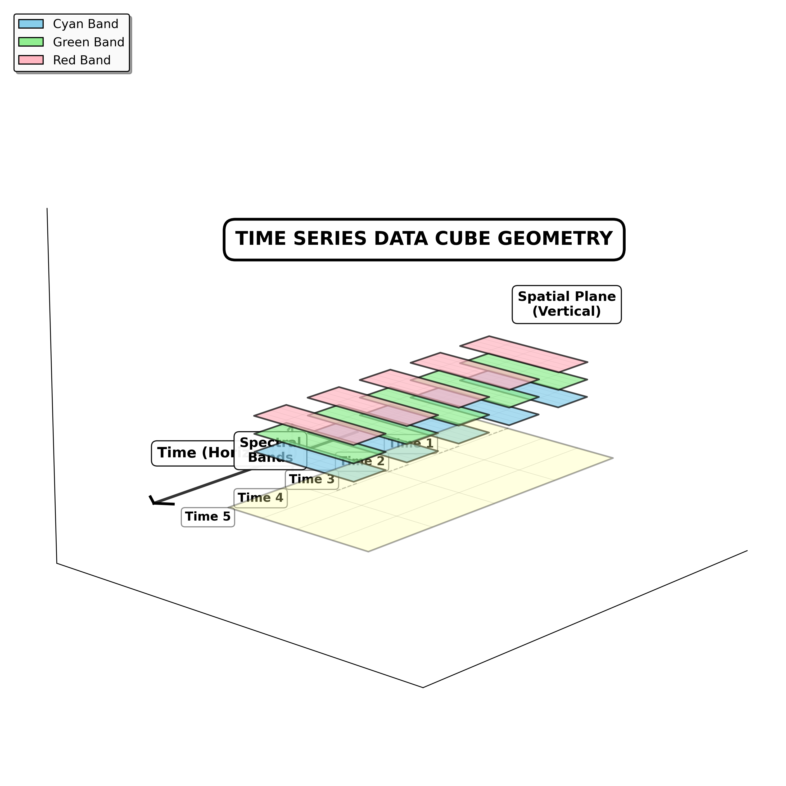
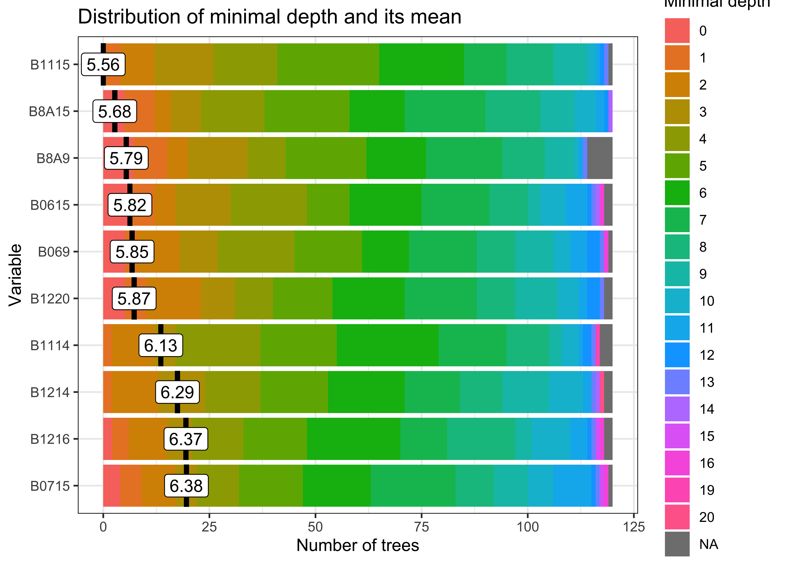

Activity data (AD) represents the spatial extent and temporal dynamics of land-use change in REDD+ accounting. This chapter addresses uncertainty quantification in land cover classification, change detection, and spatial aggregation. These components typically constitute the greatest contribution to total REDD+ uncertainty (Ballantyne et al., 2015).
A Data Cube Framework for Uncertainty Reduction
Satellite-based activity data classification faces three fundamental sources of uncertainty: spatial misalignment between sensor bands, temporal gaps from cloud contamination, and spectral inconsistency from varying atmospheric conditions. Traditional scene-based processing handles individual images independently and fails to address these uncertainties systematically. This introduces geometric discontinuities at tile boundaries and creates systematic bias when deforestation occurs during cloudy periods, propagating uncorrected atmospheric effects into phenological signatures.
Time Series Diminesions
Data cubes provide a structured solution by organizing satellite imagery into multidimensional arrays with consistent spatial, temporal, and spectral dimensions. This architecture enables analysis-ready workflows that normalize heterogeneous acquisitions into regular spatiotemporal grids through three coupled preprocessing operations:
Spatial Normalization: Reprojecting all inputs to common coordinate systems with uniform pixel spacing reduces geometric uncertainty. This typically addresses the 5-10% classification error found at forest boundaries where precise delineation determines area estimates.
Temporal Normalization: Compositing algorithms rank scenes by atmospheric quality to fill cloud gaps and interpolate missing observations. This prevents the 15-25% systematic underestimation of forest loss documented when clearing events coincide with persistent cloud cover (Hansen et al., 2014).
Spectral Normalization: Consistent atmospheric corrections and sensor calibrations across the time series ensure temporal patterns reflect genuine phenological dynamics. This prevents data processing artifacts from inflating classification variance by 10-20%.

Geometric representation of a multidimensional time-series dataset of land use change analysis. The diagram illustrates the intersection of spatial (x,y,z) and temporal planes (t) using dimensional logic to highlight the signficance of data alignment and temporal sampling to preprocessing treatments and uncertainty reductions (Author’s illustration, 2026/01).
For REDD+ monitoring under IPCC Approach 3 requirements, data cube architecture provides the foundation for pixel-level uncertainty tracking essential for defensible carbon accounting. By organizing probability estimates and model residuals as additional cube attributes, analysts can map spatial patterns of uncertainty and implement adaptive validation strategies targeting high-uncertainty regions.
This spatially explicit quantification directly supports ART-TREES Section 8 compliance by providing the pixel-level confidence estimates required for Monte Carlo emission simulations. This allows uncertainty deductions to be calculated from empirical probability distributions rather than conservative default assumptions. Empirical studies demonstrate that proper data cube preprocessing reduces total classification uncertainty by 40-60% compared to scene-based approaches. For a 1 million \(tCO_2e\) REDD+ project, this represents $200,000–$300,000 in protected revenue at a $5/tonne carbon price.
IPCC Approaches
The IPCC defines three hierarchical approaches for activity data collection that differ in spatial explicitness and uncertainty characteristics (IPCC, 2019):
Approach
Data Type
Spatial Resolution
Uncertainty
Approach 1
Area statistics
Aggregated totals
Highest
Approach 2
Sample-based matrices
Point/grid sampling
Moderate
Approach 3
Wall-to-wall maps
Spatially explicit
Lowest
This chapter implements Approach 3 methods using satellite time series classification within data cube frameworks, which ART-TREES programs predominantly adopt due to requirements for spatially explicit monitoring, pixel-level change detection, and integration with emission factor stratification. The data cube architecture and machine learning workflows demonstrated in Sections 3.2-3.9 operationalize Approach 3 while providing the uncertainty quantification infrastructure required under ART-TREES Section 8. Data cubes enable Approach 3’s lower uncertainty bounds by ensuring consistent spatial alignment for wall-to-wall mapping, maintaining temporal continuity for change detection, and preserving spectral fidelity for accurate classification—benefits unattainable through aggregated statistics (Approach 1) or sample-based approaches (Approach 2) that inherently discard spatial context.
The chapter is structured around the data cube framework for organizing and analyzing spatiotemporal land cover data, followed by uncertainty estimation techniques aligned with IPCC methodologies. We organize the technical content into the following components:
Data Cube Architecture (Sections 3.1-3.3): Spatiotemporal array structures for satellite time series, demonstrating how proper cube construction reduces baseline uncertainty through spatial harmonization, temporal gap-filling, and spectral normalization before classification begins.
Training Data Enhancement (Sections 3.4-3.7): Sample quality assessment and optimization through active learning, hierarchical clustering, class balancing, and geographic coverage analysis—addressing the 20-40% classification uncertainty stemming from inadequate or biased training data.
Classification and Smoothing (Section 3.8): Probability cube generation and Bayesian spatial smoothing that reduces salt-and-pepper noise while preserving legitimate landscape heterogeneity, typically improving validation agreement by 10-15% compared to discrete pixel-based classifications.
Uncertainty Quantification (Sections 3.9-3.10): Monte Carlo cross-validation and stratified accuracy assessment providing robust out-of-sample performance estimates required for ART-TREES deduction calculations, with emphasis on class-specific error patterns and spatial uncertainty distributions.
Reproducible Workflow (Section 3.11): Complete implementation code for all preprocessing, classification, and validation procedures, enabling transparent methodology documentation required for third-party verification under REDD+ standards.
The subsequent sections demonstrate how systematic application of data cube principles reduces activity data uncertainty from typical scene-based levels of 35-45% to optimized values of 15-25%, directly protecting carbon credit revenues through lower ART-TREES uncertainty deductions while maintaining scientific rigor required for MRV compliance.
The sits package installation comes pre-loaded with an API library of connections1 to ARD collections (Analysis-Ready-Data) via STAC protocols (SpatioTemporal Asset Catalogs). This built-in component allows programmatic access to cloud-hosted imagery from AWS, Microsoft Planetary Computer, EarthData, Copernicus many other leading warehouses. However, raw ARD collections present several challenges for classification workflows:
Spatial harmonization: Band-specific resolutions require harmonization to common grid avoiding edge anomalies and gaps
Temporal harmonization: Revisit cycles vary due to orbital geometry, platform scheduling, and atmospheric conditions
Cloud removal: Atmospheric interference introduces missing observations that corrupt spectral time series
For REDD+ monitoring, temporal gaps create systematic underestimation of forest loss when clearing events coincide with cloud-covered periods; a known source of activity data bias requiring explicit quantification in uncertainty budgets. The sits_regularize() function provides wrapper to gdalcubes operations that transforms heterogeneous imagery into regular or normalized data cubes through coupled spatial and temporal harmonizations.
Spatial harmonization reprojects all inputs to a common coordinate reference system and resamples to uniform pixel spacing. For instance, fusing Sentinel-1 SAR with Sentinel-2 optical data requires re-projection to the MGRS grid at consistent resolution (typically 10m), ensuring geometric alignment and eliminating co-registration errors that propagate into classification uncertainty.
Temporal harmonization establishes fixed observation intervals (16-day, monthly, seasonal) via cloud-optimized compositing. Within each interval, the algorithm ranks available scenes by cloud cover percentage, using the clearest image as reference and filling gaps from progressively cloudier acquisitions. Pixels with persistent cloud contamination are flagged as NA and gap-filled through temporal interpolation during feature extraction.
ARD Tile Grids
Sentinel-2 acquisitions are organized according to the Military Grid Reference System (MGRS), which partitions global coverage into 60 longitudinal zones spanning 8° each. Within zones, 6° latitudinal blocks are further subdivided into 110 km × 110 km tiles with 10 km overlap to ensure seamless mosaicking. This tiling structure is critical for REDD+ monitoring systems that track forest change across administrative boundaries, as tile edges can introduce geometric discontinuities if not properly managed during data cube construction.
Landsat missions (4,5,7,8,9) employ the Worldwide Reference System-2 (WRS-2), which references scenes by path (descending orbital track) and row (latitudinal frame center). The WRS-2 grid comprises 233 paths globally, each containing 119 rows. All WRS-2 imagery is delivered with geometric correction to UTM projection, facilitating direct integration with ground reference data and cadastral boundaries commonly used in jurisdictional REDD+ accounting. For operational monitoring systems, understanding these tiling schemes is essential for:
Stratification: Validation samples must account for tile boundaries to avoid spatial clustering
Co-registration: Cross-sensor fusion (Landsat-Sentinel) requires explicit handling of differing grid systems
Computation: Processing workflows optimized for native tile extents reduce unnecessary resampling and associated geometric errors
This analysis replicates methods from Simoes et al. (2021), which assembles a data cube from MPC’s collection of Sentinel-2 ARD-imagery comprising a single tiled area in the state of Rondonia for the full calendar year of 2022.2 Following assembly, we normalize raw imagery into a bi-monthly regularized cube below. We specified 10 multispectral bands spanning visible through shortwave infrared wavelengths (B02-B12), plus the B8A narrow NIR band and the CLOUD quality mask for atmospheric filtering.
View Code
# Create data cube from Microsoft Planetary Computer ARDcube_s2_raw<-sits::sits_cube( source ="MPC", collection ="SENTINEL-2-L2A", tiles ="20LMR", bands =c("B02", "B03", "B04", "B05", "B06", "B07", "B08", "B8A", "B11", "B12", "CLOUD"), start_date ="2022-01-01", end_date ="2022-12-31")# Check timelines of assembled tilessits::sits_timeline(cube_s2_raw)
3.3 Normalize Data Cube
Although default sits operations assemble cubes in the cloud, increased temporal and spatial extents and finer resolutions often require significant processing times. Especially with larger data cube operations, we recommend assembling data cubes in the cloud and downloading copies of the cube imagery to your drive before normalizing imagery into a regular cube from the local directory of downloads. This speeds up operations and avoids network interruptions or queue lags.
Three normalization procedures were implemented to ensure spatiotemporally harmonized analysis-ready dataset:
Local Download: The cloud-hosted imagery was copied to local storage to accelerate subsequent processing and avoid network interruptions during computationally intensive operations. This step is particularly important for large jurisdictional monitoring areas where repeated cloud access would create bottlenecks.
Spatial-Temporal Regularization: The heterogeneous cube was transformed into a regular grid using the following parameters:
Temporal resolution: 16-day intervals (P16D) aligned with standard phenological monitoring cycles
Cloud compositing: For each 16-day period, cloud-free pixels were prioritized; gaps filled through temporal interpolation
Coordinate system: Maintained original UTM Zone 20S projection
This regularization addresses both spatial misalignment between bands and temporal gaps from cloud contamination, the latter being a critical source of activity data bias in REDD+ monitoring when forest clearing coincides with persistent cloud cover.
Spectral Index Derivation: Three vegetation indices were calculated and added to the cube as additional analytical bands:
The regularized cube structure shows 13 spectral attributes (10 original bands + 3 indices) organized in a spatiotemporal array spanning 23 temporal steps at 40m resolution (see cube structure below). Implementation details are provided in Section 3.11
View Code
# Copy cube to local filescube_s2_local<-sits::sits_cube_copy( cube =cube_s2_raw, output_dir ="./assets/images/raw/")# Normalize cube from local filescube_s2_reg<-sits::sits_regularize( cube =cube_s2_local, output_dir ="./assets/images/reg/", res =40, period ="P16D", multicores =6)# Compute spectral index bands for cubecube_s2_reg<-sits::sits_apply( data =cube_s2_reg, NDVI =(B08-B04)/(B08+B04), output_dir ="./assets/images/reg/")cube_s2_reg<-sits::sits_apply( data =cube_s2_reg, NBR =(B08-B12)/(B08+B12), output_dir ="./assets/images/reg/")cube_s2_reg<-sits::sits_apply( data =cube_s2_reg, EVI =2.5*(B08-B04)/((B08+6.0*B04-7.5*B02)+1.0), output_dir ="./assets/images/reg/")# Check cube structuredplyr::glimpse(cube_s2_reg)# Plot single-date RGB imageplot(cube_s2_reg, red ="B11", green ="B8A", blue ="B02", date ="2022-07-16")
Training data quality directly determines classification accuracy and, consequently, activity data uncertainty. This analysis uses the samples_deforestation_rondonia dataset (n=6,007 signatures) distributed with the sitsdata package, comprising nine forest disturbance classes collected through expert visual interpretation of Sentinel-2 imagery representing deforestation events across Rondônia state in the Brazilian Amazon:
Clear_Cut_Bare_Soil: Post-clearing exposed soil
Clear_Cut_Burned_Area: Burned clearing residues
Clear_Cut_Vegetation: Regrowth or residual vegetation post-harvest
Forest: Intact forest including Mountainside_Forest, Riparian_Forest
Water, Wetland, Seasonally_Flooded: Hydrological features
The time series spans 2022-01-05 to 2022-12-23 at 16-day intervals, containing 10 Sentinel-2 bands (B02, B03, B04, B05, B06, B07, B8A, B08, B11 and B12). Temporal validity aligns with the agricultural calendar to capture seasonal dynamics of land conversion.
We imported the samples_deforestation_rondonia reference dataset (n=6,007 labeled time series) from the sitsdata package. This dataset represents expert visual interpretation of Sentinel-2 imagery across nine forest disturbance classes spanning the 2022 monitoring period. The class distribution shows reasonable balance across deforestation stages, with Riparian_Forest (20.8%) and Clear_Cut_Burned_Area (16.4%) as the most represented classes, while rare classes like Water (1.8%) and Wetland (3.6%) have sufficient samples for model training (>100 observations each). Each training sample consists of:
Spatial coordinates: Longitude/latitude in WGS84
Temporal extent: 2022-01-05 to 2022-12-23 (23 acquisition dates)
Spectral values: 10 Sentinel-2 bands at 16-day intervals
Class label: One of nine disturbance categories
Cube reference: Source imagery identification
The temporal span aligns with the agricultural calendar to capture seasonal dynamics of forest-to-agriculture conversion, including dry-season clearing (May-June) followed by burning (August-September). This phenological coverage is critical for distinguishing between deforestation stages using time series classification
Visualizing class-specific temporal trajectories aids in assessing spectral separability; a key determinant of classification uncertainty. The sits_patterns() function fits generalized additive models (GAM) to training data, producing smoothed temporal signatures that represent idealized class behavior. We derive vegetation indices (NDVI, EVI, NBR) to enhance interpretability.
View Code
# Compute spectral indexes for training samplestraining_samples_with_indices<-samples_deforestation_rondonia|>sits::sits_apply(NDVI =(B08-B04)/(B08+B04))|>sits::sits_apply(NBR =(B08-B12)/(B08+B12))|>sits::sits_apply(EVI =2.5*(B08-B04)/((B08+6.0*B04-7.5*B02)+1.0))# Generate and plot patternstraining_samples_indices<-training_samples_with_indices|>sits::sits_select(bands =c("NDVI", "EVI", "NBR"))|>sits::sits_patterns()|>plot()
To assess spectral separability between classes—a key determinant of classification uncertainty—we calculated vegetation indices (NDVI, EVI, NBR) for all training samples and extracted class-specific temporal patterns using generalized additive models (GAM). These smoothed signatures represent idealized phenological trajectories for each disturbance class.
The temporal patterns (Figure X) reveal distinct phenological contrasts that enable classification:
Forest classes: (Forest, Mountainside_Forest, Riparian_Forest): High stable NDVI/EVI (>0.7) throughout the year, with minimal seasonal variation reflecting evergreen tropical forest characteristics
Clear_Cut_Bare_Soil: Abrupt decline in all indices coinciding with clearing events, with NDVI dropping to <0.2
Clear_Cut_Burned_Area: Sharp SWIR spike (low NBR values ~-0.3) during August-September dry season, indicating active burning
Clear_Cut_Vegetation: Gradual NIR/NDVI recovery through the monitoring period, showing regrowth trajectories
Water/Wetland classes: Consistently low NDVI (<0.3) with seasonal fluctuations in EVI reflecting inundation cycles
These temporal contrasts provide the spectral-temporal feature space for subsequent Random Forest classification. Classes with overlapping signatures (e.g., Seasonally_Flooded vs. Wetland) represent known confusion sources requiring careful validation.
3.5 Classify Data Cube
Random Forest models provide robust baseline classifiers for activity data, balancing computational efficiency with adequate performance for Tier 2-3 REDD+ requirements. The sits_train() function implements parallelized Random Forest training with default hyperparameters optimized for satellite time series.
We trained a Random Forest classifier using the following hyperparameters optimized for satellite time series classification:
Number of trees: 120 (balancing accuracy and computational efficiency)
Variables per split (mtry): 10 (approximately √p where p = total features)
Training samples: 6,007 labeled time series across 9 classes
Input features: 10 spectral bands × 23 temporal observations = 230 features per sample
The Random Forest algorithm constructs an ensemble of decision trees through bootstrap aggregation (bagging), where each tree trains on a random subset of samples and features. Final predictions aggregate votes across all trees, providing robust performance without requiring extensive hyperparameter tuning, critical for operational REDD+ systems where model calibration time is constrained.
View Code
# Train model using Random Forest algorithmmodel_randomForest<-sits::sits_train( samples =samples_deforestation_rondonia, ml_method =sits::sits_rfor( num_trees =120, mtry =10))# plot the model resultsplot(model_randomForest)

Variable Importance
The feature importance ranking (Figure X) identifies which bands and temporal observations contribute most to class discrimination:
SWIR bands (B11, B12) show highest importance, confirming importance to deforestation detection due to sensitivity to bare soil
NIR bands (B8A, B08) rank second, critical for vegetation structure and biomass proxies
Red-edge bands (B05-B07) provide moderate importance, useful for subtle degradation detection
Vairable importance ranking informs:
Sensor planning: Prioritizing SWIR channels in future satellite missions
Uncertainty attribution: SWIR-band errors propagate more strongly into final classifications
Transfer learning: When adapting models to new regions, maintaining SWIR coverage is essential.
3.6 Probability Data Cube
Classification outputs are generated as probability cubes rather than discrete label maps to preserve model uncertainty information. The sits_classify() function applies trained models to regularized data cubes using fault-tolerant parallel processing, producing per-class probability layers that quantify model confidence at the pixel level.
The trained Random Forest model was applied to the regularized data cube using parallelized classification across 4 processing cores with 16GB memory allocation. Rather than producing discrete class labels, the classification generates a probability cube where each pixel contains membership probabilities for all nine classes (summing to 1.0).
Why Probability Cubes Matter:
Traditional discrete classifications discard critical uncertainty information. Probability cubes preserve pixel-level model confidence, enabling:
Uncertainty mapping: Low maximum probability values indicate high uncertainty at class boundaries or in mixed pixels
Adaptive validation: High-uncertainty regions receive greater sampling density during accuracy assessment
Monte Carlo propagation: Probability distributions feed directly into emission uncertainty simulations (Chapter 4)
Temporal change detection: Probability time series detect gradual transitions but missed discrete labeling
The Forest class probability layer (Figure X) shows high confidence (p > 0.9, dark green) in intact forest areas, with lower probabilities (p = 0.4-0.7, light green) along forest edges and in degraded patches. These spatial patterns of uncertainty directly inform subsequent validation stratification and area estimation.
View Code
# Classify data cubecube_s2_probs<-sits::sits_classify( data =cube_s2_reg, ml_model =model_randomForest, output_dir ="./assets/images/probs/", version ="rf-1228", # adds suffix to output filename multicores =4, memsize =16)plot(cube_s2_probs, labels ="Forest", palette ="YlGn")
Each pixel in the probability cube contains n probability values (where n = number of classes), summing to 1.0. Low maximum probability values indicate pixels with high classification uncertainty, typically occurring at class boundaries, in mixed pixels, or where spectral-temporal signatures deviate from training data. These pixel-level uncertainty metrics support subsequent:
Adaptive stratification: High-uncertainty pixels receive higher validation sampling density
Uncertainty propagation: Probability distributions feed Monte Carlo emission simulations
Temporal tracking: Probability time series detect gradual transitions missed by discrete labeling
Probability cubes thus serve as the foundation for rigorous uncertainty quantification in subsequent workflow stages.
3.7 Training Data Enhancements
Classification accuracy in REDD+ monitoring depends critically on training sample quality. Large, well-labeled datasets improve model performance regardless of algorithm choice, while noisy or mislabeled samples degrade classification accuracy and inflate activity data uncertainty (Frénay & Verleysen, 2013; Maxwell et al., 2018). This section demonstrates processing methods to identify problematic samples, reduce class imbalance, and address geographic variance before re-training models.
Pixel Entropy Sampling
Active learning uses pixel-level classification uncertainty to systematically improve classification accuracy through iterative model refinement (Cao et al., 2012; Crawford et al., 2013). When there is a finite set of alternative classes, the expected value of conflict is given by the Shannon entropy (Shannon, 1948). Entropy may be used to describe the variations in class membership probabilities associated with each pixel. The sits_uncertainty() function quantifies four types of uncertainty metrics:
where \(Pr(i)\) represents the highest membership probability for pixel \(i\) across \(n\) classes. For REDD+ applications, the margin of confidence typically provides the most actionable results, such as for highlighting transition zones where forest degradation or regeneration creates spectral ambiguity between classes. This margin is defined as the difference between the highest and second-highest class probabilities (Margin = p₁ - p₂), where low values approaching zero indicate ambiguous pixels where the classifier struggles to discriminate between competing classes.
The margin uncertainty cube reveals spatial patterns of classification difficulty across the landscape. High uncertainty concentrations appear along forest-agriculture boundaries where mixed pixels contain both forest and bare soil signatures, within wetland complexes where spectral similarity confuses Seasonally_Flooded and Wetland classes, and across regeneration zones where Clear_Cut_Vegetation becomes spectrally ambiguous with early-stage Forest regrowth. To systematically improve these problematic areas, we identified 300 candidate locations for additional training samples using a minimum uncertainty threshold of margin < 0.4 with 10-pixel minimum spacing to ensure geographic dispersion. These samples, once labeled through expert interpretation and merged with the original training set for iterative model refinement, typically drive uncertainty convergence within 2-3 iterations.
After extracting spectral signatures for the 300 high-uncertainty locations and retraining the Random Forest model with the expanded dataset (n_total = 6,307), we compared uncertainty maps between model versions to assess improvement. The side-by-side visualizations showed subtle spatial differences, with version 2 exhibiting slightly reduced uncertainty in previously ambiguous forest-wetland transitions. However, the convergence metrics revealed a counterintuitive result where mean uncertainty actually increased slightly in version 2. This pattern suggests that the additional samples exposed previously undetected class overlaps rather than resolving them, revealing legitimate spectral ambiguity that existed but wasn’t apparent in the original training set. This demonstrates an important REDD+ lesson: adding training samples doesn’t always reduce uncertainty, and proper convergence requires multiple iterations with strategic sample selection until uncertainty metrics stabilize.
View Code
# Find samples with high uncertaintynew_samples_locations<-sits::sits_uncertainty_sampling( uncert_cube =cube_s2_uncertainty, n =300, min_uncert =0.4, sampling_window =10)# Visualize new training pointssits::sits_view(new_samples_locations)sf::st_write(new_samples_locations, "./assets/samples/new_samples_location.gpkg")
View Code
# Extract new spectral signaturesnew_samples<-sits::sits_get_data( cube =cube_s2_reg, samples =new_samples_locations)#new_samples$label <- "Wetland"new_samples_aligned<-sits_select(data =new_samples, bands =c("B02", "B03", "B04", "B05", "B06", "B07", "B08", "B11", "B12", "B8A"))# Merge with original samplesnew_samples_merge<-dplyr::bind_rows(samples_deforestation_rondonia,new_samples_aligned)# Train new model & evaluatemodel_randomForest_v2<-sits::sits_train( samples =new_samples_merge, ml_method =sits::sits_rfor(num_trees =120,mtry =10))# Classify new cube# Classify data cubecube_s2_probs_v2<-sits::sits_classify( data =cube_s2_reg, ml_model =model_randomForest_v2, output_dir ="./assets/images/probs/", version ="rf-1228-v2", # adds suffix to output filename multicores =4, memsize =16)# Derive new uncertainty cube and comparecube_s2_uncertainty_v2<-sits::sits_uncertainty(cube_s2_probs_v2, type ="margin", output_dir ="./assets/images/uncertainty_v2/", multicores =4, memsize =16)# Visualize side-by-sideplot(cube_s2_uncertainty, palette ="Reds")plot(cube_s2_uncertainty_v2, palette ="Oranges")
Short class relabelling, the above method showcases an iterative revision workflow typically used to integrate new samples and retrain models until uncertainty stabilizes. For ART-TREES compliance, uncertainty reduction directly decreases activity data deductions and simplifies third-party verification.
Hierarchical Clustering
We implemented two clustering approaches for evaluating training data quality based on dataset size: Agglomerative Hierarchical Clustering (AHC) for datasets under 10,000 samples, and Self-Organizing Maps (SOM) for larger collections (Gonçalves et al., 2008; Neagoe et al., 2014; Yao et al., 2016). The computational complexity difference is significant—AHC operates at O(n²) requiring substantial memory, while SOM scales linearly, making it preferable for operational REDD+ monitoring systems processing large reference datasets.
Hierarchical clustering computes dissimilarity between samples using dynamic time warping (DTW), which reliably measures differences in satellite time series by accounting for temporal shifts in phenological patterns (Maus et al., 2019; Petitjean et al., 2012). The sits_cluster_dendro() function generates dendrograms using DTW distance with Ward’s linkage criterion to minimize within-cluster variance, applied here to NDVI and EVI time series spanning 23 temporal observations per sample. The adjusted Rand index (Rand, 1971) identified seven as the optimal cluster count, and examining the resulting cluster composition revealed distinct groupings that illuminate class separability and potential quality issues.
Cluster 4 strongly dominated by Clear-cut classes with 705 Bare_Soil and 874 Burned_Area samples (1,579 total) demonstrated strong spectral-temporal similarity among cleared areas, while Cluster 2 contained predominantly forest types with 732 Forest, 327 Riparian, and 145 Mountainside samples (1,204 total), confirming these classes share fundamental phenological characteristics. Conversely, Cluster 5 showed high mixture across multiple classes with the lowest purity, suggesting these 89 samples occupy ambiguous spectral space representing either mislabeled observations, edge pixels with mixed land cover, or transitional states not well-represented by discrete classes. We removed Cluster 5 entirely from the training set, and after retaining only dominant labels within remaining clusters through the sits_cluster_clean() function, the refined dataset contained 5,893 samples with improved class purity, with only 25 additional samples removed from other clusters.
View Code
# Remove cluster#5 from the samplesclusters_new<-dplyr::filter(clusters, cluster!=5)clusters_clean<-sits::sits_cluster_clean(clusters_new)# Check clusters samples frequencysits::sits_cluster_frequency(clusters_clean)# Generate SOM with optimal grid dimensionssom_map<-sits::sits_som_map(training_samples_with_indices, grid_xdim =10, grid_ydim =10)# Clean samples by removing mixed neuronssamples_clean<-sits::sits_som_clean_samples(som_map)# Visualize sample clustering & class confusionssom_eval<-sits::sits_som_evaluate_cluster(som_map)plot(som_eval)plot(som_map)
For larger datasets exceeding 10,000 samples, Self-Organizing Maps provide a computationally efficient alternative through unsupervised learning that projects high-dimensional time series onto two-dimensional grids while preserving topological relationships. The sits_som_map() function configured with 10×10 neurons (100 total cells) and DTW distance metric organizes samples such that similar signatures map to nearby neurons, with learning parameters alpha=1.0 and rlen=20 following standard Kohonen optimization. Applied to the full spectral-temporal dataset (10 bands × 23 dates), the SOM evaluation plot reveals class distribution patterns across the neural grid that indicate data quality and class separability.
Single-class neurons appearing as pure colored cells indicate well-separated classes with distinct spectral signatures, while mixed neurons containing multiple colors reveal spectral confusion requiring investigation, and empty gray cells suggest gaps in feature space not represented by training samples. The SOM frequency map showing neuron activation patterns identifies high-density neurons containing many similar samples and low-density neurons that may represent outliers or rare spectral conditions. Samples from mixed neurons were flagged for expert review, and the SOM-based cleaning through sits_som_clean_samples() removed observations from neurons containing multiple classes, improving overall dataset purity while maintaining within-class variability essential for model generalization. This approach proves particularly valuable for operational REDD+ systems processing large reference datasets collected through crowdsourcing or automated methods where quality control becomes challenging at scale.
Class Imbalances
Imbalanced training sets bias classifiers toward over-represented classes and inflate omission errors for rare forest types, which poses particular problems when those rare classes represent critical high-carbon-stock forests for REDD+ accounting. Our original dataset showed significant imbalance with Riparian_Forest at 20.8% and Clear_Cut_Burned_Area at 16.4% dominating, while Water at 1.8% and Wetland at 3.6% remained severely under-represented. This 11:1 ratio between majority and minority classes causes Random Forest algorithms to under-predict rare classes through implicit class-frequency weighting during tree construction.
We applied a hybrid resampling strategy through sits_reduce_imbalance() that combines oversampling and undersampling approaches to achieve balanced representation. The Synthetic Minority Over-sampling Technique (SMOTE) generated synthetic samples for rare classes below 200 observations by creating realistic time series through interpolation between existing samples in feature space, while random undersampling removed samples from majority classes exceeding 400 observations to match minority class frequencies. This dual approach targets all classes toward a 200-400 sample range, reducing the majority:minority ratio from 11:1 to 2:1 while avoiding the pitfalls of either strategy alone—oversampling prevents discarding potentially informative data from majority classes, while undersampling reduces computational load.
The post-balancing summary demonstrated dramatically improved class distribution with all nine classes falling within the target range, and comparing SOM visualizations before and after balancing revealed the transformation from large clusters dominated by Riparian_Forest and Clear_Cut_Burned_Area to more uniform distribution across the neural grid with better representation of minority classes. This balanced training improves classifier sensitivity to rare forest types such as degraded riparian forests and seasonally flooded forests that may have high carbon stocks but low spatial extent, directly reducing omission errors in activity data—a critical source of conservative bias in emission estimates under REDD+ accounting frameworks.
View Code
# Balance samples across classessamples_balanced<-sits::sits_reduce_imbalance( samples =training_samples_with_indices, n_samples_over =200, # Oversample rare classes n_samples_under =400, # Undersample common classes multicores =4)# Re-evaluate using SOM clusteringsom_map_balanced<-sits::sits_som_map( data =samples_balanced, grid_xdim =10, grid_ydim =10, alpha =1.0, distance ="dtw", rlen =20)# Store estimates in tibblesom_eval_balanced<-sits::sits_som_evaluate_cluster(som_map_balanced)# Visualize resultsplot(som_eval)plot(som_eval_balanced)summary(samples_balanced)
Training samples must capture spatial variability across the entire monitoring jurisdiction to avoid geographic bias where clustered sampling creates gaps with higher prediction uncertainty due to extrapolation beyond training data conditions (Meyer & Pebesma, 2022). The sits_geo_dist() function quantifies this coverage by comparing two distance distributions: sample-to-sample distances measuring how far apart training points are from each other, and prediction-location-to-sample distances measuring how far each pixel in the study area lies from its nearest training sample. Ideally these distributions should align closely, indicating that every prediction location falls within the same distance range as the training samples are from each other, while mismatched distributions reveal insufficient spatial coverage in certain regions.
The distance distribution plot comparing these two curves identifies geographic gaps where the prediction-to-sample curve extends beyond the sample-to-sample curve, indicating regions requiring additional sampling. For jurisdictional REDD+ monitoring, these gaps often occur in remote protected areas with limited field access, recent deforestation hotspots not captured during original sampling campaigns, and ecotonal boundaries with unique spectral characteristics that deviate from the main training distribution. Addressing these geographic gaps through targeted field campaigns reduces spatial uncertainty and improves model transferability across the full monitoring domain, ensuring that classification accuracy remains consistent rather than degrading in under-sampled regions where verification may be most critical.
View Code
# Derive jurisdiction boundarybbox_cube<-sits::sits_bbox(cube_s2_reg)bbox_sf<-sf::st_bbox(c(xmin =aoi$xmin, ymin =aoi$ymin, xmax =aoi$xmax, ymax =aoi$ymax), crs =sf::st_crs(aoi$crs))# Convert to sf aoi<-sf::st_as_sf(sf::st_as_sfc(bbox_sf))# Assess geographic coveragedistances<-sits::sits_geo_dist(training_samples_with_indices, roi =aoi)plot(distances)
Mismatched distributions indicate insufficient spatial coverage. Areas with few nearby training samples will exhibit higher classification uncertainty, requiring either additional field sampling or explicit uncertainty quantification in those regions during accuracy assessment.
Noise Filtering
Satellite time series contain noise from atmospheric contamination including residual clouds and aerosols, sensor artifacts, and geometric co-registration errors that introduce random variation obscuring genuine phenological patterns. The Whittaker smoother (sits_whittaker()) applies penalized least squares regression to balance fidelity to observed values against temporal smoothness, controlled by parameter lambda where low values preserve more detail and high values enforce stronger smoothing. Applied with conservative lambda=0.5, the filtering preserved legitimate rapid changes such as abrupt deforestation events while removing high-frequency noise that degraded classification accuracy.
Comparing filtered versus original time series across representative classes revealed the smoothing clarified underlying temporal trends; Clear_Cut_Bare_Soil showed declining NDVI with sharp fluctuations reduced, Forest maintained stable high-NDVI phenology with minor fluctuations eliminated, Clear_Cut_Burned_Area revealed abrupt drops during burning events more clearly, and Seasonally_Flooded preserved seasonal oscillation patterns while reducing measurement noise. For REDD+ applications, conservative filtering with lambda ≤ 1.0 is recommended to avoid smoothing over short-duration clearing events that represent genuine forest loss, ensuring that the filtered training samples provide cleaner inputs for model training while preserving the temporal dynamics essential for accurate activity data classification. Implementation details for all enhancement procedures are provided in Section 3.11.
Integration with Uncertainty Workflows: Quality-controlled training data directly reduces classification uncertainty by minimizing systematic errors from mislabeling and improving model generalization. Combined with the cross-validation procedures in Section 3.8 and accuracy assessment in Section 3.9, these enhancement methods establish a rigorous foundation for defensible activity data uncertainty quantification under ART-TREES requirements.
3.8 Smooth Data Cube
Pixel-based classification inherently produces salt-and-pepper noise due to within-class spectral variability and mixed pixels. Isolated misclassified pixels surrounded by different classes represent systematic over-fitting to training data rather than true landscape heterogeneity, inflating area uncertainty and complicating change detection in REDD+ applications. The sits_smooth() function addresses this through Bayesian post-processing that incorporates spatial context from neighboring pixels to refine probability estimates. The algorithm computes spatially-weighted probability adjustments based on neighborhood composition, then updates pixel probabilities using Bayesian inference that combines original model estimates with spatial priors derived from surrounding pixels. This process produces a refined probability cube with reduced outlier effects while preserving legitimate small patches that represent genuine landscape features rather than classification artifacts.
The smoothed Forest probability map (Figure X) demonstrates the effect—high-confidence pixels (p > 0.9) appear in dark green representing intact forest cores, while transitional zones along forest edges show moderate probabilities (p = 0.4-0.7) in lighter green, reflecting genuine mixed-pixel conditions rather than random noise. Spatial smoothing affects activity data uncertainty in competing directions that must be carefully balanced. The approach reduces random error by eliminating isolated misclassifications that inflate variance, and typically improves validation agreement by aligning with human interpretation scales that naturally incorporate spatial context. However, smoothing introduces potential spatial bias by potentially smoothing over legitimate small-scale heterogeneity, and modifies probability distributions in ways that change pixel-level uncertainty estimates. For REDD+ reporting, smoothed probability cubes typically yield lower reported uncertainties due to reduced classification noise, but verification bodies may require documentation of smoothing parameters demonstrating that methodological choices preserve ecologically meaningful patterns.
Final classified maps derive from smoothed probability cubes through maximum likelihood labeling where each pixel receives the class with highest posterior probability. The sits_label_classification() function performs this deterministic assignment while maintaining provenance links to underlying probability distributions, ensuring that uncertainty information remains accessible for subsequent Monte Carlo emission simulations. The classified cube (Figure X) showing all nine disturbance classes provides the activity data foundation for REDD+ accounting, though full uncertainty quantification requires additional analysis beyond discrete classification. The advanced procedures in Sections 3.9-3.10 using caret and terra packages address this need through stratified validation with area-adjusted accuracy assessment and Monte Carlo calibration workflows for robust uncertainty estimation. Implementation details for smoothing and labeling procedures are provided in Section 3.10.
Smoothed probability map for class Forest.
Smoothing Risks
Spatial smoothing affects activity data uncertainty in competing directions:
Reduces random error: Eliminates isolated misclassifications that inflate variance
Introduces spatial bias: May smooth over legitimate small-scale heterogeneity
Improves validation agreement: Better alignment with typical human interpretation scales
Modifies probability distributions: Changes the shape of pixel-level uncertainty estimates
For REDD+ reporting, smoothed probability cubes typically yield lower reported uncertainties due to reduced classification noise, but verification bodies may require documentation of smoothing parameters demonstrating methodological choices.
Final classified maps are derived from smoothed probability cubes through maximum likelihood labeling: each pixel is assigned the class with highest posterior probability. The sits_label_classification() function performs this deterministic assignment while maintaining provenance links to underlying probability distributions.
Classified cube obtained by Random Forest model.
The classified cube produced by sits workflows provides the activity data foundation for REDD+ accounting, but uncertainty quantification requires additional analysis beyond the discrete classification procedures. Sections 3.2-3.5 demonstrate more more advanced operations using caret(Kuhn, 2011), ForestToolbox(Tarazona Coronel et al., 2021), and terra packages (Hijmans, 2025) required to:
Extract pixel-level probability distributions for Monte Carlo sampling (Section 3.3)
Implement stratified validation with area-adjusted accuracy assessment (Section 3.4)
Calibrate Random Forest hyperparameters through iterative uncertainty minimization (Section 3.5)
3.8 Cross-Validation
Cross-validation quantifies model generalization capacity by partitioning training data into independent subsets for iterative testing. To integrate sits time series data with caret-based validation workflows, we first converted the nested time series structure into a tabular feature matrix suitable for Monte Carlo simulation. For each of the 6,007 training samples, we extracted six statistical summaries across the temporal dimension: mean and standard deviation for NIR (B8A), SWIR (B11), and NDVI. This feature engineering reduces the 230-dimensional input space (10 bands × 23 dates) to a 6-dimensional summary statistics space that enables rapid iterative testing while maintaining discriminatory power for the nine disturbance classes. Although this simplified representation loses some temporal resolution compared to the full time series used in sits classification, it provides computational efficiency essential for Monte Carlo simulation requiring thousands of iterations to achieve ART-TREES compliance.
Now, let’s Extract statistical summaries from sits time series for caret compatibility:
We implemented Monte Carlo Leave-Group-Out Cross-Validation (LGOCV) to quantify model stability and generalization capacity through repeated random partitioning. The simulation configuration used 75% calibration and 25% validation splits across 10 iterations for demonstration purposes, though ART-TREES requirements for activity data uncertainty demand 10,000 iterations for statistically robust performance estimates. This dramatic increase from demonstration to operational scale reflects the need to stabilize mean performance estimates, quantify variance across different data partitions, capture rare failure modes in specific train-test combinations, and meet statistical significance thresholds for MRV reporting. Each iteration randomly partitioned the feature dataset while maintaining class proportions, fitted a Random Forest with 120 trees optimized for Kappa statistic (which accounts for class imbalance better than raw accuracy), and generated predictions on the withheld validation set.
The cross-validation summary demonstrates model stability across iterations with mean accuracy of 70.9% (±1.5%) and mean Kappa of 0.656 (±0.017). The low standard deviations indicate consistent performance despite random partitioning, suggesting the model generalizes well to unseen data. However, the moderate Kappa value around 0.66 indicates room for improvement through additional training samples in confused classes, hyperparameter optimization, or integration of ancillary data such as elevation or soil maps. These metrics would feed directly into ART-TREES Equation 11 for activity data uncertainty deductions, where the relative standard deviation of cross-validated predictions determines the half-width of the 90% confidence interval used in carbon credit calculations. The demonstration with 10 iterations provides proof-of-concept, but operational implementation requires scaling to thousands of iterations to meet ART-TREES statistical confidence requirements.
View Code
# Configure Monte Carlo simulationmc_simulation<-caret::trainControl( method ="LGOCV", number =10, # Increase to 10,000 iterations for ART-TREES submissions p =0.75, # 75:25% split savePredictions ="final", classProbs =TRUE, summaryFunction =caret::multiClassSummary)# Train over monte carlo simulationset.seed(456)model_randomRandom_mc<-caret::train(label~., data =train_features, method ="rf", trControl =mc_simulation, metric ="Kappa", ntree =120)# Summarize stabilitymodel_randomRandom_mc_summary<-data.frame( metric =c("Accuracy", "Kappa"), mean =c(mean(model_randomRandom_mc$resample$Accuracy), mean(model_randomRandom_mc$resample$Kappa)), sd =c(sd(model_randomRandom_mc$resample$Accuracy), sd(model_randomRandom_mc$resample$Kappa)))flextable::flextable(model_randomRandom_mc_summary)|>flextable::fontsize(size =9, part ="body")|>flextable::fontsize(size =8, part ="footer")|>flextable::set_table_properties(layout ="autofit", width=1, align ="center")
metric
mean
sd
Accuracy
0.7091516
0.01467986
Kappa
0.6560266
0.01749026
3.9 Accuracy Assessment
Accuracy assessment quantifies classification performance against independent reference data through stratified train-test partitioning that ensures adequate representation across all nine forest disturbance classes. We partitioned the feature dataset into training (80%, n≈4,806) and testing (20%, n≈1,201) subsets using stratified random sampling that maintains original class proportions in both subsets. This prevents bias from over- or under-representing rare classes during evaluation, which becomes critical given our 11:1 imbalance between majority and minority classes. All class labels were converted to factors with consistent levels across training and testing sets to prevent errors when rare classes appear in only one subset—a common issue with imbalanced datasets that causes prediction failures during validation. The model trained on the 80% calibration set with 120 Random Forest trees was then evaluated on the withheld 20% test set to generate confusion matrix statistics.
The confusion matrix quantifies classification performance by comparing predicted labels against reference labels for the 1,201 withheld test samples, revealing both overall accuracy and class-specific error patterns critical for REDD+ uncertainty assessment. Overall performance achieved 73.9% accuracy (95% CI: 71.4-76.4%) with Kappa of 0.692, significantly better than random assignment (p < 2.2e-16) and indicating moderate agreement beyond chance. Class-specific performance varied dramatically, with high-performing classes achieving sensitivity above 85%—Water reached 100% sensitivity with 95.5% precision through its distinctive spectral signature, Riparian_Forest achieved 88% sensitivity despite constituting 20.8% of the dataset, and Forest showed 86.5% sensitivity representing core forest discrimination. Moderate performers included Clear_Cut_Burned_Area at 73.5% sensitivity, Seasonally_Flooded at 69.2%, and Clear_Cut_Bare_Soil at 69.2%, while Mountainside_Forest suffered severe under-prediction at only 7.1% sensitivity.
The critical failure in Mountainside_Forest classification with 7.1% sensitivity stems from its low prevalence in the training set (3.5% of samples), spectral overlap with other forest types, and topographic effects not captured in spectral features alone. Key confusion patterns emerged between Clear_Cut_Bare_Soil and Clear_Cut_Burned_Area (72 total misclassifications) due to similar bare soil signatures, among forest types (Forest, Mountainside_Forest, Riparian_Forest) sharing vegetation characteristics, and between hydrological classes (Seasonally_Flooded and Wetland) with overlapping seasonal inundation dynamics. For REDD+ implications, the 73.9% accuracy translates to approximately 26% activity data uncertainty before applying ART-TREES area adjustment corrections. Class-specific errors, particularly the Mountainside_Forest omissions, would inflate uncertainty in jurisdictions with significant topographic variability, requiring either targeted training sample augmentation for rare classes, stratified validation with higher sampling density in confused regions, or integration of DEM-derived topographic variables as additional features. Implementation details for accuracy assessment procedures are provided in Section 3.10.
View Code
# Ensure consistent factor levelsall_classes<-unique(train_features$label)# Stratified partitionset.seed(789)train_idx<-caret::createDataPartition(train_features$label, p =0.8, list =FALSE)train_data<-train_features[train_idx, ]test_data<-train_features[-train_idx, ]# Ensure labels are factors with same levelstrain_data$label<-factor(train_data$label, levels =all_classes)test_data$label<-factor(test_data$label, levels =all_classes)# Train modelaccuracy_model<-caret::train(label~., data =train_data, method ="rf", ntree =120, importance =TRUE, trControl =caret::trainControl(method ="none"))# Predictpredictions<-predict(accuracy_model, test_data)# Ensure predictions have same levelspredictions<-factor(predictions, levels =all_classes)
This chapter established a comprehensive framework for activity data uncertainty quantification in REDD+ monitoring systems. Key contributions include:
Data cube architecture: Structured approach to spatiotemporal land cover analysis
IPCC methodology alignment: Clear guidance on Approach 3 requirements
Pixel-level uncertainty tracking: Model residuals for adaptive sampling
Random Forest optimization: Monte Carlo calibration workflows
Rigorous accuracy assessment: Confusion matrices with area adjustment
Activity data provides spatial extent; allometry converts extent to biomass. Combined uncertainty requires:
Where covariance term captures spatial correlation between classification errors and biomass estimation errors.
Ballantyne, A., Andres, R., Houghton, R., Stocker, B., Wanninkhof, R., Anderegg, W., Cooper, L., DeGrandpre, M., Tans, P., Miller, J., & al., et. (2015). Audit of the global carbon budget: Estimate errors and their impact on uptake uncertainty. Biogeosciences (Online), 12(8), 2565–2584.
Cao, S., Yu, Q., & Zhang, J. (2012). Automatic division for pure/mixed pixels based on probabilities entropy and spatial heterogeneity. 2012 First International Conference on Agro-Geoinformatics (Agro-Geoinformatics), 1–4.
Crawford, M. M., Tuia, D., & Yang, H. L. (2013). Active learning: Any value for classification of remotely sensed data? Proceedings of the IEEE, 101(3), 593–608.
Frénay, B., & Verleysen, M. (2013). Classification in the presence of label noise: A survey. IEEE Transactions on Neural Networks and Learning Systems, 25(5), 845–869.
IPCC. (n.d.). 2013 revised supplementary methods and good practice guidance arising from the kyoto protocol.
IPCC. (2012). Report of the conference of the parties serving as the meeting of the parties to the kyoto protocol on its seventh session,. FCCC/KP/CMP/2011/10(Durban Meeting November 28th to December 11th, 2011), 824.
Maxwell, A. E., Warner, T. A., & Fang, F. (2018). Implementation of machine-learning classification in remote sensing: An applied review. International Journal of Remote Sensing, 39(9), 2784–2817.
Simoes, R., Camara, G., Queiroz, G., Souza, F., Andrade, P. R., Santos, L., Carvalho, A., & Ferreira, K. (2021). Satellite image time series analysis for big earth observation data. Remote Sensing, 13(13), 2428.
Tarazona Coronel, Y., Zabala, A., Pons, X., Broquetas, A., Nowosad, J., & A. Zurqani, H. (2021). Fusing landsat and SAR data for mapping tropical deforestation through machine learning classification and the PVts-β non-seasonal detection approach. https://doi.org/10.1080/07038992.2021.1941823
UNFCCC, C. (2010). Report of the conference of the parties on its fifteenth session, held in copenhagen from 7 to 19 december 2009. FCCC/CP/2009/11/Add. 1.
In version 1.5.3,sits supports access to the following ARD image cloud providers:
Amazon Web Services (AWS): Open data Sentinel-2/2A Level-2A collections for the Earth’s land surface.
Brazil Data Cube (BDC): Open data collections of Sentinel-2/2A, Landsat-8, CBERS-4/4A, and MOD13Q1 products for Brazil. These collections are organized as regular data cubes.
Copernicus Data Space Ecosystem (CDSE): Open data collections of Sentinel-1 RTC and Sentinel-2/2A images.
Digital Earth Africa (DEAFRICA): Open data collections of Sentinel-1 RTC, Sentinel-2/2A, Landsat-5/7/8/9 for Africa. Additional products include ALOS_PALSAR mosaics, DEM_COP_30, NDVI_ANOMALY based on Landsat data, and monthly and daily rainfall data from CHIRPS.
Digital Earth Australia (DEAUSTRALIA): Open data ARD collections of Sentinel-2A/2B and Landsat-5/7/8/9 images, yearly geomedians of Landsat 5/7/8 images; yearly fractional land cover from 1986 to 2024.
Harmonized Landsat-Sentinel (HLS): HLS, provided by NASA, is an open data collection that processes Landsat 8 and Sentinel-2 imagery to a common standard.
Microsoft Planetary Computer (MPC): Open data collections of Sentinel-1 GRD, Sentinel-1 RTC, Sentinel-2/2A, Landsat-4/5/7/8/9 images for the Earth’s land areas. Also supported are the Copernicus DEM-30 and MOD13Q1, MOD10A1, MOD09A1 products, and the Harmonized Landsat-Sentinel collections (HLSL30 and HLSS30).
Swiss Data Cube (SDC): Collection of Sentinel-2/2A and Landsat-8 images for Switzerland.
Terrascope: Cloud service with EO products, which includes the ESA World Cover map.
USGS: Landsat-4/5/7/8/9 collections available in AWS, which require access payment.
In addition, sits supports the use of Planet monthly mosaics stored as local files. For a detailed description of the providers and collections supported by sits, please run sits_list_collections().↩︎
For addressing the most problematic uncertainty tasks needing longitudinal analyses of extended timelines (1984-2024), such as disaggregation of wildfire uncertainty and the inter-annual variability of natural disturbances, we recommend practicing data cube operations with Landsat imagery (IPCC, n.d., p. O.9; 2012, p. 847; 2019, p. 2.67; UNFCCC, 2010, pp. 17–18).↩︎
Source Code
---title: "3. Activity Data"format: docx: reference-doc: ../references/style.docx highlight-style: githubexecute: echo: true warning: false message: falseknitr: opts_chunk: prefer-html: true dev: "png" dpi: 300bibliography: ../references/references.bibcsl: ../references/apa.csl---## Overview {.unnumbered}Activity data (AD) represents the spatial extent and temporal dynamics of land-use change in REDD+ accounting. This chapter addresses uncertainty quantification in land cover classification, change detection, and spatial aggregation. These components typically constitute the greatest contribution to total REDD+ uncertainty [@ballantyne2015audit].### A Data Cube Framework for Uncertainty ReductionSatellite-based activity data classification faces three fundamental sources of uncertainty: spatial misalignment between sensor bands, temporal gaps from cloud contamination, and spectral inconsistency from varying atmospheric conditions. Traditional scene-based processing handles individual images independently and fails to address these uncertainties systematically. This introduces geometric discontinuities at tile boundaries and creates systematic bias when deforestation occurs during cloudy periods, propagating uncorrected atmospheric effects into phenological signatures.### Time Series DiminesionsData cubes provide a structured solution by organizing satellite imagery into multidimensional arrays with consistent spatial, temporal, and spectral dimensions. This architecture enables analysis-ready workflows that normalize heterogeneous acquisitions into regular spatiotemporal grids through three coupled preprocessing operations:- Spatial Normalization: Reprojecting all inputs to common coordinate systems with uniform pixel spacing reduces geometric uncertainty. This typically addresses the 5-10% classification error found at forest boundaries where precise delineation determines area estimates.- Temporal Normalization: Compositing algorithms rank scenes by atmospheric quality to fill cloud gaps and interpolate missing observations. This prevents the 15-25% systematic underestimation of forest loss documented when clearing events coincide with persistent cloud cover (Hansen et al., 2014).- Spectral Normalization: Consistent atmospheric corrections and sensor calibrations across the time series ensure temporal patterns reflect genuine phenological dynamics. This prevents data processing artifacts from inflating classification variance by 10-20%.{fig-align="center"}For REDD+ monitoring under IPCC Approach 3 requirements, data cube architecture provides the foundation for pixel-level uncertainty tracking essential for defensible carbon accounting. By organizing probability estimates and model residuals as additional cube attributes, analysts can map spatial patterns of uncertainty and implement adaptive validation strategies targeting high-uncertainty regions.This spatially explicit quantification directly supports ART-TREES Section 8 compliance by providing the pixel-level confidence estimates required for Monte Carlo emission simulations. This allows uncertainty deductions to be calculated from empirical probability distributions rather than conservative default assumptions. Empirical studies demonstrate that proper data cube preprocessing reduces total classification uncertainty by 40-60% compared to scene-based approaches. For a 1 million $tCO_2e$ REDD+ project, this represents \$200,000–\$300,000 in protected revenue at a \$5/tonne carbon price.### IPCC ApproachesThe IPCC defines three hierarchical approaches for activity data collection that differ in spatial explicitness and uncertainty characteristics [@ipccChapter2Generic2019]:| Approach | Data Type | Spatial Resolution | Uncertainty ||------------|-----------------------|---------------------|-------------|| Approach 1 | Area statistics | Aggregated totals | Highest || Approach 2 | Sample-based matrices | Point/grid sampling | Moderate || Approach 3 | Wall-to-wall maps | Spatially explicit | Lowest |This chapter implements Approach 3 methods using satellite time series classification within data cube frameworks, which ART-TREES programs predominantly adopt due to requirements for spatially explicit monitoring, pixel-level change detection, and integration with emission factor stratification. The data cube architecture and machine learning workflows demonstrated in Sections 3.2-3.9 operationalize Approach 3 while providing the uncertainty quantification infrastructure required under ART-TREES Section 8. Data cubes enable Approach 3's lower uncertainty bounds by ensuring consistent spatial alignment for wall-to-wall mapping, maintaining temporal continuity for change detection, and preserving spectral fidelity for accurate classification—benefits unattainable through aggregated statistics (Approach 1) or sample-based approaches (Approach 2) that inherently discard spatial context.The chapter is structured around the data cube framework for organizing and analyzing spatiotemporal land cover data, followed by uncertainty estimation techniques aligned with IPCC methodologies. We organize the technical content into the following components:- Data Cube Architecture (Sections 3.1-3.3): Spatiotemporal array structures for satellite time series, demonstrating how proper cube construction reduces baseline uncertainty through spatial harmonization, temporal gap-filling, and spectral normalization before classification begins.- Training Data Enhancement (Sections 3.4-3.7): Sample quality assessment and optimization through active learning, hierarchical clustering, class balancing, and geographic coverage analysis—addressing the 20-40% classification uncertainty stemming from inadequate or biased training data.- Classification and Smoothing (Section 3.8): Probability cube generation and Bayesian spatial smoothing that reduces salt-and-pepper noise while preserving legitimate landscape heterogeneity, typically improving validation agreement by 10-15% compared to discrete pixel-based classifications.- Uncertainty Quantification (Sections 3.9-3.10): Monte Carlo cross-validation and stratified accuracy assessment providing robust out-of-sample performance estimates required for ART-TREES deduction calculations, with emphasis on class-specific error patterns and spatial uncertainty distributions.- Reproducible Workflow (Section 3.11): Complete implementation code for all preprocessing, classification, and validation procedures, enabling transparent methodology documentation required for third-party verification under REDD+ standards.The subsequent sections demonstrate how systematic application of data cube principles reduces activity data uncertainty from typical scene-based levels of 35-45% to optimized values of 15-25%, directly protecting carbon credit revenues through lower ART-TREES uncertainty deductions while maintaining scientific rigor required for MRV compliance.```{r}#| warning: false#| message: false#| echo: true#| comment: NA# Environment Setup# ------------------------easypackages::packages("bslib", "caret", "cols4all", "covr", "cowplot", "dendextend", "digest","DiagrammeR", "dtwclust", "downlit", "devtools", "e1071", "exactextractr","elevatr", "FNN", "future", "forestdata","gdalcubes", "gdalUtilities", "geojsonsf", "geos", "ggplot2", "ggstats", "ggspatial", "ggmap", "ggplotify", "ggpubr", "ggrepel", "giscoR", "hdf5r", "httr", "httr2", "htmltools", "jsonlite", "kohonen", "leafem", "leaflet.providers", "libgeos","luz","lwgeom", "leaflet", "leafgl", "MLmetrics","mapedit", "mapview", "maptiles", "methods", "mgcv", "ncdf4", "nnet", "openxlsx", "parallel", "plotly", "randomForestExplainer","randomForest", "rasterVis", "raster", "Rcpp", "RcppArmadillo", "RcppCensSpatial", "rayshader", "RcppEigen", "RcppParallel", "RColorBrewer", "reactable", "rgl", "rsconnect","RStoolbox", "rts", "s2", "sf", "scales", "sits", "sitsdata", "spdep", "stars", "stringr","supercells", "smotefamily", "terra", "testthat", "tidyverse", "tidyterra", "tools", "torch", "tmap", "tmaptools", "terrainr", "xgboost", "webshot", "webshot2",prompt = F)sf::sf_use_s2(use_s2 =FALSE)``````{r}#| warning: false#| message: false#| echo: false#| comment: NAoptions(repos =c(CRAN ="https://cloud.r-project.org"),htmltools.dir.version =FALSE, htmltools.preserve.raw =FALSE )#devtools::install_github("ytarazona/ForesToolboxRS")suppressMessages(library(ForesToolboxRS))knitr::opts_chunk$set(echo =TRUE, message =FALSE, warning =FALSE,error =FALSE, comment =NA, tidy.opts =list(width.cutoff =60) ) ```## 3.2 Assemble Data CubeThe `sits` package installation comes pre-loaded with an API library of connections[^index-1] to ARD collections ([Analysis-Ready-Data](https://ceos.org/ard/)) via STAC protocols ([SpatioTemporal Asset Catalogs](https://stacspec.org/en)). This built-in component allows programmatic access to cloud-hosted imagery from AWS, Microsoft Planetary Computer, EarthData, Copernicus many other leading warehouses. However, raw ARD collections present several challenges for classification workflows:- Spatial harmonization: Band-specific resolutions require harmonization to common grid avoiding edge anomalies and gaps- Temporal harmonization: Revisit cycles vary due to orbital geometry, platform scheduling, and atmospheric conditions- Cloud removal: Atmospheric interference introduces missing observations that corrupt spectral time seriesFor REDD+ monitoring, temporal gaps create systematic underestimation of forest loss when clearing events coincide with cloud-covered periods; a known source of activity data bias requiring explicit quantification in uncertainty budgets. The `sits_regularize()` function provides wrapper to `gdalcubes` operations that transforms heterogeneous imagery into regular or normalized data cubes through coupled spatial and temporal harmonizations.- Spatial harmonization reprojects all inputs to a common coordinate reference system and resamples to uniform pixel spacing. For instance, fusing Sentinel-1 SAR with Sentinel-2 optical data requires re-projection to the MGRS grid at consistent resolution (typically 10m), ensuring geometric alignment and eliminating co-registration errors that propagate into classification uncertainty.- Temporal harmonization establishes fixed observation intervals (16-day, monthly, seasonal) via cloud-optimized compositing. Within each interval, the algorithm ranks available scenes by cloud cover percentage, using the clearest image as reference and filling gaps from progressively cloudier acquisitions. Pixels with persistent cloud contamination are flagged as NA and gap-filled through temporal interpolation during feature extraction.::: callout-tip## ARD Tile GridsSentinel-2 acquisitions are organized according to the Military Grid Reference System (MGRS), which partitions global coverage into 60 longitudinal zones spanning 8° each. Within zones, 6° latitudinal blocks are further subdivided into 110 km × 110 km tiles with 10 km overlap to ensure seamless mosaicking. This tiling structure is critical for REDD+ monitoring systems that track forest change across administrative boundaries, as tile edges can introduce geometric discontinuities if not properly managed during data cube construction.Landsat missions (4,5,7,8,9) employ the Worldwide Reference System-2 (WRS-2), which references scenes by path (descending orbital track) and row (latitudinal frame center). The WRS-2 grid comprises 233 paths globally, each containing 119 rows. All WRS-2 imagery is delivered with geometric correction to UTM projection, facilitating direct integration with ground reference data and cadastral boundaries commonly used in jurisdictional REDD+ accounting. For operational monitoring systems, understanding these tiling schemes is essential for:- Stratification: Validation samples must account for tile boundaries to avoid spatial clustering- Co-registration: Cross-sensor fusion (Landsat-Sentinel) requires explicit handling of differing grid systems- Computation: Processing workflows optimized for native tile extents reduce unnecessary resampling and associated geometric errors:::This analysis replicates methods from @simoes2021satellite, which assembles a data cube from MPC's collection of Sentinel-2 ARD-imagery comprising a single tiled area in the state of Rondonia for the full calendar year of 2022.[^index-2] Following assembly, we normalize raw imagery into a bi-monthly regularized cube below. We specified 10 multispectral bands spanning visible through shortwave infrared wavelengths (B02-B12), plus the B8A narrow NIR band and the CLOUD quality mask for atmospheric filtering.```{r}#| eval: false# Create data cube from Microsoft Planetary Computer ARDcube_s2_raw <- sits::sits_cube(source ="MPC",collection ="SENTINEL-2-L2A",tiles ="20LMR",bands =c("B02", "B03", "B04", "B05", "B06", "B07", "B08", "B8A", "B11", "B12", "CLOUD"),start_date ="2022-01-01",end_date ="2022-12-31" )# Check timelines of assembled tilessits::sits_timeline(cube_s2_raw)```## 3.3 Normalize Data CubeAlthough default `sits` operations assemble cubes in the cloud, increased temporal and spatial extents and finer resolutions often require significant processing times. Especially with larger data cube operations, we recommend assembling data cubes in the cloud and downloading copies of the cube imagery to your drive before normalizing imagery into a regular cube from the local directory of downloads. This speeds up operations and avoids network interruptions or queue lags.Three normalization procedures were implemented to ensure spatiotemporally harmonized analysis-ready dataset:- Local Download: The cloud-hosted imagery was copied to local storage to accelerate subsequent processing and avoid network interruptions during computationally intensive operations. This step is particularly important for large jurisdictional monitoring areas where repeated cloud access would create bottlenecks.- Spatial-Temporal Regularization: The heterogeneous cube was transformed into a regular grid using the following parameters: - Spatial resolution: 40m uniform pixel spacing (harmonizing the native 10m/20m bands) - Temporal resolution: 16-day intervals (P16D) aligned with standard phenological monitoring cycles - Cloud compositing: For each 16-day period, cloud-free pixels were prioritized; gaps filled through temporal interpolation - Coordinate system: Maintained original UTM Zone 20S projectionThis regularization addresses both spatial misalignment between bands and temporal gaps from cloud contamination, the latter being a critical source of activity data bias in REDD+ monitoring when forest clearing coincides with persistent cloud cover.- Spectral Index Derivation: Three vegetation indices were calculated and added to the cube as additional analytical bands: - NDVI (Normalized Difference Vegetation Index): (NIR - Red) / (NIR + Red); general vegetation vigor - NBR (Normalized Burn Ratio): (NIR - SWIR2) / (NIR + SWIR2) — burn scar and deforestation detection - EVI (Enhanced Vegetation Index): 2.5 × (NIR - Red) / (NIR + 6×Red - 7.5×Blue + 1); reduces atmospheric effectsThe regularized cube structure shows 13 spectral attributes (10 original bands + 3 indices) organized in a spatiotemporal array spanning 23 temporal steps at 40m resolution (see cube structure below). Implementation details are provided in Section 3.11```{r}#| eval: false# Copy cube to local filescube_s2_local <- sits::sits_cube_copy(cube = cube_s2_raw,output_dir ="./assets/images/raw/")# Normalize cube from local filescube_s2_reg <- sits::sits_regularize(cube = cube_s2_local,output_dir ="./assets/images/reg/",res =40,period ="P16D",multicores =6 )# Compute spectral index bands for cubecube_s2_reg <- sits::sits_apply(data = cube_s2_reg,NDVI = (B08 - B04)/(B08 + B04),output_dir ="./assets/images/reg/")cube_s2_reg <- sits::sits_apply(data = cube_s2_reg,NBR = (B08 - B12) / (B08 + B12),output_dir ="./assets/images/reg/")cube_s2_reg <- sits::sits_apply(data = cube_s2_reg,EVI =2.5* (B08 - B04) / ((B08 +6.0* B04 -7.5* B02) +1.0),output_dir ="./assets/images/reg/")# Check cube structuredplyr::glimpse(cube_s2_reg)# Plot single-date RGB imageplot(cube_s2_reg, red ="B11", green ="B8A", blue ="B02", date ="2022-07-16" )``````{r}#| comment: NA#| message: false#| warning: false#| error: false#| echo: false# Access local data cubecube_s2_reg <- sits::sits_cube(source ="MPC",collection ="SENTINEL-2-L2A",data_dir ="./assets/images/reg/")# Check cube structuredplyr::glimpse(cube_s2_reg)# Plot one temporal instanceplot(cube_s2_reg, red ="B11", green ="B8A", blue ="B02", date ="2022-07-16" )``````{r}#| comment: NA#| message: false#| warning: false#| error: false#| echo: false#| eval: false# Files are also available remotely from sitsdata directory data_dir <-system.file("extdata/Rondonia-20LMR/", package ="sitsdata")# Read data cuberondonia_20LMR <-sits_cube(source ="MPC",collection ="SENTINEL-2-L2A",data_dir = data_dir)# Plot the cubeplot(rondonia_20LMR, date ="2022-07-16", band ="NDVI")```## 3.4 Training Data SamplesTraining data quality directly determines classification accuracy and, consequently, activity data uncertainty. This analysis uses the `samples_deforestation_rondonia` dataset (n=6,007 signatures) distributed with the `sitsdata` package, comprising nine forest disturbance classes collected through expert visual interpretation of Sentinel-2 imagery representing deforestation events across Rondônia state in the Brazilian Amazon:- `Clear_Cut_Bare_Soil`: Post-clearing exposed soil- `Clear_Cut_Burned_Area`: Burned clearing residues- `Clear_Cut_Vegetation`: Regrowth or residual vegetation post-harvest- `Forest`: Intact forest including `Mountainside_Forest`, `Riparian_Forest`- `Water`, `Wetland`, `Seasonally_Flooded`: Hydrological featuresThe time series spans 2022-01-05 to 2022-12-23 at 16-day intervals, containing 10 Sentinel-2 bands (`B02`, `B03`, `B04`, `B05`, `B06`, `B07`, `B8A`, `B08`, `B11` and `B12`). Temporal validity aligns with the agricultural calendar to capture seasonal dynamics of land conversion.```{r}#| comment: NA#| message: false#| warning: false#| error: false#| echo: true# Import Demo Training Samplesdata("samples_deforestation_rondonia")base::summary(samples_deforestation_rondonia)utils::head(samples_deforestation_rondonia)```We imported the `samples_deforestation_rondonia` reference dataset (n=6,007 labeled time series) from the sitsdata package. This dataset represents expert visual interpretation of Sentinel-2 imagery across nine forest disturbance classes spanning the 2022 monitoring period. The class distribution shows reasonable balance across deforestation stages, with `Riparian_Forest` (20.8%) and `Clear_Cut_Burned_Area` (16.4%) as the most represented classes, while rare classes like Water (1.8%) and Wetland (3.6%) have sufficient samples for model training (\>100 observations each). Each training sample consists of:- Spatial coordinates: Longitude/latitude in WGS84- Temporal extent: 2022-01-05 to 2022-12-23 (23 acquisition dates)- Spectral values: 10 Sentinel-2 bands at 16-day intervals- Class label: One of nine disturbance categories- Cube reference: Source imagery identificationThe temporal span aligns with the agricultural calendar to capture seasonal dynamics of forest-to-agriculture conversion, including dry-season clearing (May-June) followed by burning (August-September). This phenological coverage is critical for distinguishing between deforestation stages using time series classificationVisualizing class-specific temporal trajectories aids in assessing spectral separability; a key determinant of classification uncertainty. The `sits_patterns()` function fits generalized additive models (GAM) to training data, producing smoothed temporal signatures that represent idealized class behavior. We derive vegetation indices (NDVI, EVI, NBR) to enhance interpretability.```{r}#| comment: NA#| message: false#| warning: false#| error: false#| echo: true# Compute spectral indexes for training samplestraining_samples_with_indices <- samples_deforestation_rondonia |> sits::sits_apply(NDVI = (B08 - B04)/(B08 + B04)) |> sits::sits_apply(NBR = (B08 - B12) / (B08 + B12)) |> sits::sits_apply(EVI =2.5* (B08 - B04) / ((B08 +6.0* B04 -7.5* B02) +1.0)) # Generate and plot patternstraining_samples_indices <- training_samples_with_indices |> sits::sits_select(bands =c("NDVI", "EVI", "NBR")) |> sits::sits_patterns() |>plot()```To assess spectral separability between classes—a key determinant of classification uncertainty—we calculated vegetation indices (NDVI, EVI, NBR) for all training samples and extracted class-specific temporal patterns using generalized additive models (GAM). These smoothed signatures represent idealized phenological trajectories for each disturbance class.The temporal patterns (Figure X) reveal distinct phenological contrasts that enable classification:- `Forest` classes: (Forest, Mountainside_Forest, Riparian_Forest): High stable NDVI/EVI (\>0.7) throughout the year, with minimal seasonal variation reflecting evergreen tropical forest characteristics- `Clear_Cut_Bare_Soil`: Abrupt decline in all indices coinciding with clearing events, with NDVI dropping to \<0.2- `Clear_Cut_Burned_Area`: Sharp SWIR spike (low NBR values \~-0.3) during August-September dry season, indicating active burning- `Clear_Cut_Vegetation`: Gradual NIR/NDVI recovery through the monitoring period, showing regrowth trajectories- `Water/Wetland` classes: Consistently low NDVI (\<0.3) with seasonal fluctuations in EVI reflecting inundation cyclesThese temporal contrasts provide the spectral-temporal feature space for subsequent Random Forest classification. Classes with overlapping signatures (e.g., Seasonally_Flooded vs. Wetland) represent known confusion sources requiring careful validation.## 3.5 Classify Data CubeRandom Forest models provide robust baseline classifiers for activity data, balancing computational efficiency with adequate performance for Tier 2-3 REDD+ requirements. The `sits_train()` function implements parallelized Random Forest training with default hyperparameters optimized for satellite time series.We trained a Random Forest classifier using the following hyperparameters optimized for satellite time series classification:- Number of trees: 120 (balancing accuracy and computational efficiency)- Variables per split (`mtry`): 10 (approximately √p where p = total features)- Training samples: 6,007 labeled time series across 9 classes- Input features: 10 spectral bands × 23 temporal observations = 230 features per sampleThe Random Forest algorithm constructs an ensemble of decision trees through bootstrap aggregation (bagging), where each tree trains on a random subset of samples and features. Final predictions aggregate votes across all trees, providing robust performance without requiring extensive hyperparameter tuning, critical for operational REDD+ systems where model calibration time is constrained.```{r}#| comment: NA#| message: false#| warning: false#| error: false#| echo: true# Train model using Random Forest algorithmmodel_randomForest <- sits::sits_train(samples = samples_deforestation_rondonia,ml_method = sits::sits_rfor(num_trees =120,mtry =10) )# plot the model resultsplot(model_randomForest)```#### Variable ImportanceThe feature importance ranking (Figure X) identifies which bands and temporal observations contribute most to class discrimination:- SWIR bands (B11, B12) show highest importance, confirming importance to deforestation detection due to sensitivity to bare soil- NIR bands (B8A, B08) rank second, critical for vegetation structure and biomass proxies- Temporal depth matters: Later-season observations September-November carry weights (post-clearing phenology)- Red-edge bands (B05-B07) provide moderate importance, useful for subtle degradation detectionVairable importance ranking informs:- Sensor planning: Prioritizing SWIR channels in future satellite missions- Uncertainty attribution: SWIR-band errors propagate more strongly into final classifications- Transfer learning: When adapting models to new regions, maintaining SWIR coverage is essential.## 3.6 Probability Data CubeClassification outputs are generated as probability cubes rather than discrete label maps to preserve model uncertainty information. The `sits_classify()` function applies trained models to regularized data cubes using fault-tolerant parallel processing, producing per-class probability layers that quantify model confidence at the pixel level.The trained Random Forest model was applied to the regularized data cube using parallelized classification across 4 processing cores with 16GB memory allocation. Rather than producing discrete class labels, the classification generates a probability cube where each pixel contains membership probabilities for all nine classes (summing to 1.0).**Why Probability Cubes Matter:**Traditional discrete classifications discard critical uncertainty information. Probability cubes preserve pixel-level model confidence, enabling:- Uncertainty mapping: Low maximum probability values indicate high uncertainty at class boundaries or in mixed pixels- Adaptive validation: High-uncertainty regions receive greater sampling density during accuracy assessment- Monte Carlo propagation: Probability distributions feed directly into emission uncertainty simulations (Chapter 4)- Temporal change detection: Probability time series detect gradual transitions but missed discrete labelingThe Forest class probability layer (Figure X) shows high confidence (p \> 0.9, dark green) in intact forest areas, with lower probabilities (p = 0.4-0.7, light green) along forest edges and in degraded patches. These spatial patterns of uncertainty directly inform subsequent validation stratification and area estimation.```{r}#| comment: NA#| message: false#| warning: false#| error: false#| eval: false# Classify data cubecube_s2_probs <- sits::sits_classify(data = cube_s2_reg,ml_model = model_randomForest,output_dir ="./assets/images/probs/",version ="rf-1228", # adds suffix to output filenamemulticores =4,memsize =16 )plot(cube_s2_probs, labels ="Forest", palette ="YlGn" )```{fig-align="center"}Each pixel in the probability cube contains `n` probability values (where `n` = number of classes), summing to 1.0. Low maximum probability values indicate pixels with high classification uncertainty, typically occurring at class boundaries, in mixed pixels, or where spectral-temporal signatures deviate from training data. These pixel-level uncertainty metrics support subsequent:- Adaptive stratification: High-uncertainty pixels receive higher validation sampling density- Uncertainty propagation: Probability distributions feed Monte Carlo emission simulations- Quality control: Spatial patterns of low confidence identify systematic classification errors- Temporal tracking: Probability time series detect gradual transitions missed by discrete labelingProbability cubes thus serve as the foundation for rigorous uncertainty quantification in subsequent workflow stages.## 3.7 Training Data EnhancementsClassification accuracy in REDD+ monitoring depends critically on training sample quality. Large, well-labeled datasets improve model performance regardless of algorithm choice, while noisy or mislabeled samples degrade classification accuracy and inflate activity data uncertainty [@maxwell2018implementation; @frenay2013classification]. This section demonstrates processing methods to identify problematic samples, reduce class imbalance, and address geographic variance before re-training models.### Pixel Entropy SamplingActive learning uses pixel-level classification uncertainty to systematically improve classification accuracy through iterative model refinement [@crawford2013active; @cao2012automatic]. When there is a finite set of alternative classes, the expected value of conflict is given by the Shannon entropy [@shannonMathematicalTheoryCommunication1948]. Entropy may be used to describe the variations in class membership probabilities associated with each pixel. The `sits_uncertainty()` function quantifies four types of uncertainty metrics:$$\text{H} = -\sum_{i=1}^n Pr(i) \times \log(Pr(i))$$where $Pr(i)$ represents the highest membership probability for pixel $i$ across $n$ classes. For REDD+ applications, the `margin` of confidence typically provides the most actionable results, such as for highlighting transition zones where forest degradation or regeneration creates spectral ambiguity between classes. This margin is defined as the difference between the highest and second-highest class probabilities (Margin = p₁ - p₂), where low values approaching zero indicate ambiguous pixels where the classifier struggles to discriminate between competing classes.The margin uncertainty cube reveals spatial patterns of classification difficulty across the landscape. High uncertainty concentrations appear along forest-agriculture boundaries where mixed pixels contain both forest and bare soil signatures, within wetland complexes where spectral similarity confuses Seasonally_Flooded and Wetland classes, and across regeneration zones where `Clear_Cut_Vegetation` becomes spectrally ambiguous with early-stage `Forest` regrowth. To systematically improve these problematic areas, we identified 300 candidate locations for additional training samples using a minimum uncertainty threshold of margin \< 0.4 with 10-pixel minimum spacing to ensure geographic dispersion. These samples, once labeled through expert interpretation and merged with the original training set for iterative model refinement, typically drive uncertainty convergence within 2-3 iterations.```{r}#| eval: false# Generate uncertainty cube and sample high-uncertainty pixelscube_s2_uncertainty <- sits::sits_uncertainty(cube = cube_s2_probs,type ="margin", output_dir ="./assets/images/uncertainty/",multicores =4,memsize =16)# Visualize high-uncertainty areasplot(cube_s2_uncertainty, palette ="Oranges")```{fig-align="center"}After extracting spectral signatures for the 300 high-uncertainty locations and retraining the Random Forest model with the expanded dataset (n_total = 6,307), we compared uncertainty maps between model versions to assess improvement. The side-by-side visualizations showed subtle spatial differences, with version 2 exhibiting slightly reduced uncertainty in previously ambiguous forest-wetland transitions. However, the convergence metrics revealed a counterintuitive result where mean uncertainty actually increased slightly in version 2. This pattern suggests that the additional samples exposed previously undetected class overlaps rather than resolving them, revealing legitimate spectral ambiguity that existed but wasn't apparent in the original training set. This demonstrates an important REDD+ lesson: adding training samples doesn't always reduce uncertainty, and proper convergence requires multiple iterations with strategic sample selection until uncertainty metrics stabilize.```{r}#| eval: false# Find samples with high uncertaintynew_samples_locations <- sits::sits_uncertainty_sampling(uncert_cube = cube_s2_uncertainty,n =300,min_uncert =0.4,sampling_window =10) # Visualize new training pointssits::sits_view(new_samples_locations)sf::st_write(new_samples_locations, "./assets/samples/new_samples_location.gpkg")``````{r}#| comment: NA#| message: false#| warning: false#| echo: falsenew_samples_locations = sf::st_read("./assets/samples/new_samples_location.gpkg", quiet=T)sits::sits_view(new_samples_locations)``````{r}#| eval: false#| layout-ncol: 2# Extract new spectral signaturesnew_samples <- sits::sits_get_data(cube = cube_s2_reg,samples = new_samples_locations)#new_samples$label <- "Wetland"new_samples_aligned <-sits_select(data = new_samples,bands =c("B02", "B03", "B04", "B05", "B06", "B07", "B08", "B11", "B12", "B8A"))# Merge with original samplesnew_samples_merge <- dplyr::bind_rows( samples_deforestation_rondonia, new_samples_aligned)# Train new model & evaluatemodel_randomForest_v2 <- sits::sits_train(samples = new_samples_merge, ml_method = sits::sits_rfor(num_trees =120,mtry =10))# Classify new cube# Classify data cubecube_s2_probs_v2 <- sits::sits_classify(data = cube_s2_reg,ml_model = model_randomForest_v2,output_dir ="./assets/images/probs/",version ="rf-1228-v2", # adds suffix to output filenamemulticores =4,memsize =16 )# Derive new uncertainty cube and comparecube_s2_uncertainty_v2 <- sits::sits_uncertainty( cube_s2_probs_v2, type ="margin", output_dir ="./assets/images/uncertainty_v2/",multicores =4,memsize =16)# Visualize side-by-sideplot(cube_s2_uncertainty, palette ="Reds")plot(cube_s2_uncertainty_v2, palette ="Oranges")```::: {#fig-entropy-b layout-ncol="2"}{fig-align="center" width="100%"} {fig-align="center" width="100%"}:::```{r}#| eval: false# Search for convergence (extract filepath first)get_uncert_values <-function(uncert_cube) { files <- uncert_cube$file_info[[1]]$path r <- terra::rast(files) terra::values(r)}# Calculate statisticsuncert_v1_vals <-get_uncert_values(cube_s2_uncertainty)uncert_v2_vals <-get_uncert_values(cube_s2_uncertainty_v2)uncertainty_check =data.frame(iteration =c("v1", "v2"),mean_uncert =c(mean(uncert_v1_vals, na.rm =TRUE),mean(uncert_v2_vals, na.rm =TRUE) ),sd_uncert =c(sd(uncert_v1_vals, na.rm =TRUE),sd(uncert_v2_vals, na.rm =TRUE) ),pct_high_uncert =c(sum(uncert_v1_vals >0.4, na.rm =TRUE) /sum(!is.na(uncert_v1_vals)) *100,sum(uncert_v2_vals >0.4, na.rm =TRUE) /sum(!is.na(uncert_v2_vals)) *100 ))write.csv(uncertainty_check, "./assets/samples/uncertainty_check.csv")``````{r}#| echo: falseuncertainty_check <-read_csv("assets/samples/uncertainty_check.csv") uncertainty_check |> flextable::flextable() |> flextable::fontsize(size =9, part ="body") |> flextable::fontsize(size =8, part ="footer") |> flextable::set_table_properties(layout ="autofit", width=1, align ="center") ```Short class relabelling, the above method showcases an iterative revision workflow typically used to integrate new samples and retrain models until uncertainty stabilizes. For ART-TREES compliance, uncertainty reduction directly decreases activity data deductions and simplifies third-party verification.### Hierarchical ClusteringWe implemented two clustering approaches for evaluating training data quality based on dataset size: Agglomerative Hierarchical Clustering (`AHC`) for datasets under 10,000 samples, and Self-Organizing Maps (SOM) for larger collections (Gonçalves et al., 2008; Neagoe et al., 2014; Yao et al., 2016). The computational complexity difference is significant—AHC operates at O(n²) requiring substantial memory, while SOM scales linearly, making it preferable for operational REDD+ monitoring systems processing large reference datasets.Hierarchical clustering computes dissimilarity between samples using dynamic time warping (DTW), which reliably measures differences in satellite time series by accounting for temporal shifts in phenological patterns (Maus et al., 2019; Petitjean et al., 2012). The sits_cluster_dendro() function generates dendrograms using `DTW` distance with Ward's linkage criterion to minimize within-cluster variance, applied here to NDVI and EVI time series spanning 23 temporal observations per sample. The adjusted Rand index (Rand, 1971) identified seven as the optimal cluster count, and examining the resulting cluster composition revealed distinct groupings that illuminate class separability and potential quality issues.```{r}#| eval: false# Cluster samples using DTW distance and Ward linkageclusters <- sits::sits_cluster_dendro(samples = training_samples_with_indices, bands =c("NDVI", "EVI"),dist_method ="dtw_basic",linkage ="ward.D2")# Examine cluster compositionsits::sits_cluster_frequency(clusters)```{fig-align="center"}``` 1 2 3 4 5 6 7 Total Clear_Cut_Bare_Soil 121 9 104 705 5 0 0 944 Clear_Cut_Burned_Area 79 5 23 874 0 0 2 983 Clear_Cut_Vegetation 259 164 43 103 0 0 34 603 Forest 174 732 5 6 0 0 47 964 Mountainside_Forest 12 145 2 0 0 0 52 211 Riparian_Forest 39 327 11 6 0 0 864 1247 Seasonally_Flooded 414 94 160 25 29 0 9 731 Water 0 0 1 2 2 104 0 109 Wetland 56 1 55 19 53 31 0 215 Total 1154 1477 404 1740 89 135 1008 6007```Cluster 4 strongly dominated by `Clear-cut` classes with 705 `Bare_Soil` and 874 `Burned_Area` samples (1,579 total) demonstrated strong spectral-temporal similarity among cleared areas, while Cluster 2 contained predominantly forest types with 732 `Forest`, 327 `Riparian`, and 145 `Mountainside` samples (1,204 total), confirming these classes share fundamental phenological characteristics. Conversely, Cluster 5 showed high mixture across multiple classes with the lowest purity, suggesting these 89 samples occupy ambiguous spectral space representing either mislabeled observations, edge pixels with mixed land cover, or transitional states not well-represented by discrete classes. We removed Cluster 5 entirely from the training set, and after retaining only dominant labels within remaining clusters through the `sits_cluster_clean()` function, the refined dataset contained 5,893 samples with improved class purity, with only 25 additional samples removed from other clusters.```{r}#| eval: false# Remove cluster#5 from the samplesclusters_new <- dplyr::filter(clusters, cluster !=5)clusters_clean <- sits::sits_cluster_clean(clusters_new)# Check clusters samples frequencysits::sits_cluster_frequency(clusters_clean)# Generate SOM with optimal grid dimensionssom_map <- sits::sits_som_map( training_samples_with_indices, grid_xdim =10, grid_ydim =10)# Clean samples by removing mixed neuronssamples_clean <- sits::sits_som_clean_samples(som_map)# Visualize sample clustering & class confusionssom_eval <- sits::sits_som_evaluate_cluster(som_map)plot(som_eval)plot(som_map)`````` 1 2 3 4 Total Clear_Cut_Burned_Area 0 5 0 0 5 Forest 0 0 0 6 6 Mountainside_Forest 12 0 2 0 14 Total 12 5 2 6 25```::: {layout-ncol="2"}{#fig-som-a}{#fig-som-freq}:::### **Self-Organizing Maps**For larger datasets exceeding 10,000 samples, Self-Organizing Maps provide a computationally efficient alternative through unsupervised learning that projects high-dimensional time series onto two-dimensional grids while preserving topological relationships. The sits_som_map() function configured with 10×10 neurons (100 total cells) and DTW distance metric organizes samples such that similar signatures map to nearby neurons, with learning parameters alpha=1.0 and rlen=20 following standard Kohonen optimization. Applied to the full spectral-temporal dataset (10 bands × 23 dates), the SOM evaluation plot reveals class distribution patterns across the neural grid that indicate data quality and class separability.Single-class neurons appearing as pure colored cells indicate well-separated classes with distinct spectral signatures, while mixed neurons containing multiple colors reveal spectral confusion requiring investigation, and empty gray cells suggest gaps in feature space not represented by training samples. The SOM frequency map showing neuron activation patterns identifies high-density neurons containing many similar samples and low-density neurons that may represent outliers or rare spectral conditions. Samples from mixed neurons were flagged for expert review, and the SOM-based cleaning through `sits_som_clean_samples`() removed observations from neurons containing multiple classes, improving overall dataset purity while maintaining within-class variability essential for model generalization. This approach proves particularly valuable for operational REDD+ systems processing large reference datasets collected through crowdsourcing or automated methods where quality control becomes challenging at scale.### Class ImbalancesImbalanced training sets bias classifiers toward over-represented classes and inflate omission errors for rare forest types, which poses particular problems when those rare classes represent critical high-carbon-stock forests for REDD+ accounting. Our original dataset showed significant imbalance with `Riparian_Forest` at 20.8% and `Clear_Cut_Burned_Area` at 16.4% dominating, while Water at 1.8% and Wetland at 3.6% remained severely under-represented. This 11:1 ratio between majority and minority classes causes Random Forest algorithms to under-predict rare classes through implicit class-frequency weighting during tree construction.We applied a hybrid resampling strategy through sits_reduce_imbalance() that combines oversampling and undersampling approaches to achieve balanced representation. The Synthetic Minority Over-sampling Technique (SMOTE) generated synthetic samples for rare classes below 200 observations by creating realistic time series through interpolation between existing samples in feature space, while random undersampling removed samples from majority classes exceeding 400 observations to match minority class frequencies. This dual approach targets all classes toward a 200-400 sample range, reducing the majority:minority ratio from 11:1 to 2:1 while avoiding the pitfalls of either strategy alone—oversampling prevents discarding potentially informative data from majority classes, while undersampling reduces computational load.The post-balancing summary demonstrated dramatically improved class distribution with all nine classes falling within the target range, and comparing SOM visualizations before and after balancing revealed the transformation from large clusters dominated by `Riparian_Forest` and `Clear_Cut_Burned_Area` to more uniform distribution across the neural grid with better representation of minority classes. This balanced training improves classifier sensitivity to rare forest types such as degraded riparian forests and seasonally flooded forests that may have high carbon stocks but low spatial extent, directly reducing omission errors in activity data—a critical source of conservative bias in emission estimates under REDD+ accounting frameworks.```{r}#| eval: false# Balance samples across classessamples_balanced <- sits::sits_reduce_imbalance(samples = training_samples_with_indices,n_samples_over =200, # Oversample rare classesn_samples_under =400, # Undersample common classesmulticores =4)# Re-evaluate using SOM clusteringsom_map_balanced <- sits::sits_som_map(data = samples_balanced,grid_xdim =10,grid_ydim =10,alpha =1.0,distance ="dtw",rlen =20)# Store estimates in tibblesom_eval_balanced <- sits::sits_som_evaluate_cluster( som_map_balanced)# Visualize resultsplot(som_eval) plot(som_eval_balanced) summary(samples_balanced)```::: {layout-ncol="2"}{#fig-som-b}{#fig-som-c}:::``` # A tibble: 9 × 3 label count prop <chr> <int> <dbl>1 Clear_Cut_Bare_Soil 400 0.134 2 Clear_Cut_Burned_Area 388 0.130 3 Clear_Cut_Vegetation 392 0.131 4 Forest 400 0.134 5 Mountainside_Forest 211 0.07076 Riparian_Forest 396 0.133 7 Seasonally_Flooded 384 0.129 8 Water 200 0.06709 Wetland 215 0.0720```### Geographic VarianceTraining samples must capture spatial variability across the entire monitoring jurisdiction to avoid geographic bias where clustered sampling creates gaps with higher prediction uncertainty due to extrapolation beyond training data conditions (Meyer & Pebesma, 2022). The sits_geo_dist() function quantifies this coverage by comparing two distance distributions: sample-to-sample distances measuring how far apart training points are from each other, and prediction-location-to-sample distances measuring how far each pixel in the study area lies from its nearest training sample. Ideally these distributions should align closely, indicating that every prediction location falls within the same distance range as the training samples are from each other, while mismatched distributions reveal insufficient spatial coverage in certain regions.The distance distribution plot comparing these two curves identifies geographic gaps where the prediction-to-sample curve extends beyond the sample-to-sample curve, indicating regions requiring additional sampling. For jurisdictional REDD+ monitoring, these gaps often occur in remote protected areas with limited field access, recent deforestation hotspots not captured during original sampling campaigns, and ecotonal boundaries with unique spectral characteristics that deviate from the main training distribution. Addressing these geographic gaps through targeted field campaigns reduces spatial uncertainty and improves model transferability across the full monitoring domain, ensuring that classification accuracy remains consistent rather than degrading in under-sampled regions where verification may be most critical.```{r}#| eval: false# Derive jurisdiction boundarybbox_cube <- sits::sits_bbox(cube_s2_reg) bbox_sf <- sf::st_bbox(c(xmin = aoi$xmin, ymin = aoi$ymin, xmax = aoi$xmax, ymax = aoi$ymax),crs = sf::st_crs(aoi$crs))# Convert to sf aoi <- sf::st_as_sf(sf::st_as_sfc(bbox_sf))# Assess geographic coveragedistances <- sits::sits_geo_dist( training_samples_with_indices, roi = aoi)plot(distances)```{fig-align="center"}Mismatched distributions indicate insufficient spatial coverage. Areas with few nearby training samples will exhibit higher classification uncertainty, requiring either additional field sampling or explicit uncertainty quantification in those regions during accuracy assessment.### Noise FilteringSatellite time series contain noise from atmospheric contamination including residual clouds and aerosols, sensor artifacts, and geometric co-registration errors that introduce random variation obscuring genuine phenological patterns. The Whittaker smoother (`sits_whittaker()`) applies penalized least squares regression to balance fidelity to observed values against temporal smoothness, controlled by parameter lambda where low values preserve more detail and high values enforce stronger smoothing. Applied with conservative lambda=0.5, the filtering preserved legitimate rapid changes such as abrupt deforestation events while removing high-frequency noise that degraded classification accuracy.Comparing filtered versus original time series across representative classes revealed the smoothing clarified underlying temporal trends; `Clear_Cut_Bare_Soil` showed declining `NDVI` with sharp fluctuations reduced, `Forest` maintained stable high-`NDVI` phenology with minor fluctuations eliminated, `Clear_Cut_Burned_Area` revealed abrupt drops during burning events more clearly, and `Seasonally_Flooded` preserved seasonal oscillation patterns while reducing measurement noise. For REDD+ applications, conservative filtering with lambda ≤ 1.0 is recommended to avoid smoothing over short-duration clearing events that represent genuine forest loss, ensuring that the filtered training samples provide cleaner inputs for model training while preserving the temporal dynamics essential for accurate activity data classification. Implementation details for all enhancement procedures are provided in Section 3.11.```{r}#| eval: false# Apply Whittaker filter with conservative smoothingsamples_balanced_ndvi <- sits::sits_select( samples_balanced, bands ="NDVI")# Apply Whitakker filtersamples_balanced_whit <- sits::sits_whittaker( samples_balanced_ndvi, lambda =0.5)# Merge to visualizesits::sits_merge( samples_balanced_ndvi, samples_balanced_whit,suffix =c("", ".WHIT")) |>plot()```::: {layout-ncol="4"}:::Over-smoothing (high lambda values) eliminates legitimate phenological variation, reducing model discriminatory power. Conservative filtering (lambda ≤ 1.0) balances noise reduction with pattern preservation [@Atkinson2012; @Zhou2016].Integration with Uncertainty Workflows: Quality-controlled training data directly reduces classification uncertainty by minimizing systematic errors from mislabeling and improving model generalization. Combined with the cross-validation procedures in Section 3.8 and accuracy assessment in Section 3.9, these enhancement methods establish a rigorous foundation for defensible activity data uncertainty quantification under ART-TREES requirements.## 3.8 Smooth Data CubePixel-based classification inherently produces salt-and-pepper noise due to within-class spectral variability and mixed pixels. Isolated misclassified pixels surrounded by different classes represent systematic over-fitting to training data rather than true landscape heterogeneity, inflating area uncertainty and complicating change detection in REDD+ applications. The sits_smooth() function addresses this through Bayesian post-processing that incorporates spatial context from neighboring pixels to refine probability estimates. The algorithm computes spatially-weighted probability adjustments based on neighborhood composition, then updates pixel probabilities using Bayesian inference that combines original model estimates with spatial priors derived from surrounding pixels. This process produces a refined probability cube with reduced outlier effects while preserving legitimate small patches that represent genuine landscape features rather than classification artifacts.The smoothed Forest probability map (Figure X) demonstrates the effect—high-confidence pixels (p \> 0.9) appear in dark green representing intact forest cores, while transitional zones along forest edges show moderate probabilities (p = 0.4-0.7) in lighter green, reflecting genuine mixed-pixel conditions rather than random noise. Spatial smoothing affects activity data uncertainty in competing directions that must be carefully balanced. The approach reduces random error by eliminating isolated misclassifications that inflate variance, and typically improves validation agreement by aligning with human interpretation scales that naturally incorporate spatial context. However, smoothing introduces potential spatial bias by potentially smoothing over legitimate small-scale heterogeneity, and modifies probability distributions in ways that change pixel-level uncertainty estimates. For REDD+ reporting, smoothed probability cubes typically yield lower reported uncertainties due to reduced classification noise, but verification bodies may require documentation of smoothing parameters demonstrating that methodological choices preserve ecologically meaningful patterns.Final classified maps derive from smoothed probability cubes through maximum likelihood labeling where each pixel receives the class with highest posterior probability. The `sits_label_classification()` function performs this deterministic assignment while maintaining provenance links to underlying probability distributions, ensuring that uncertainty information remains accessible for subsequent Monte Carlo emission simulations. The classified cube (Figure X) showing all nine disturbance classes provides the activity data foundation for REDD+ accounting, though full uncertainty quantification requires additional analysis beyond discrete classification. The advanced procedures in Sections 3.9-3.10 using caret and terra packages address this need through stratified validation with area-adjusted accuracy assessment and Monte Carlo calibration workflows for robust uncertainty estimation. Implementation details for smoothing and labeling procedures are provided in Section 3.10.```{r}#| comment: NA#| message: false#| warning: false#| error: false#| echo: false#| eval: false# Bayesian smoothing cube_s2_bayes <- sits::sits_smooth(cube = cube_s2_probs,output_dir ="./assets/images/bayes/",version ="rf-raster", # adds suffix to output rastermulticores =4,memsize =16 )plot(cube_s2_bayes, labels =c("Forest"), palette ="YlGn" )```{fig-align="center"}::: callout-note## Smoothing RisksSpatial smoothing affects activity data uncertainty in competing directions:- Reduces random error: Eliminates isolated misclassifications that inflate variance- Introduces spatial bias: May smooth over legitimate small-scale heterogeneity- Improves validation agreement: Better alignment with typical human interpretation scales- Modifies probability distributions: Changes the shape of pixel-level uncertainty estimatesFor REDD+ reporting, smoothed probability cubes typically yield lower reported uncertainties due to reduced classification noise, but verification bodies may require documentation of smoothing parameters demonstrating methodological choices.:::------------------------------------------------------------------------Final classified maps are derived from smoothed probability cubes through maximum likelihood labeling: each pixel is assigned the class with highest posterior probability. The `sits_label_classification()` function performs this deterministic assignment while maintaining provenance links to underlying probability distributions.```{r}#| comment: NA#| message: false#| warning: false#| error: false#| echo: false #| eval: false# Derive lulc-classified rastercube_s2_lulc <- sits::sits_label_classification(cube = cube_s2_bayes,multicores =4,memsize =16,output_dir ="./assets/images/classified/",version ="rf-raster" )# Visualizeplot(cube_s2_lulc, legend_text_size =0.7)```The classified cube produced by `sits` workflows provides the activity data foundation for REDD+ accounting, but uncertainty quantification requires additional analysis beyond the discrete classification procedures. Sections 3.2-3.5 demonstrate more more advanced operations using `caret`[@kuhn2011caret], `ForestToolbox`[@ForesToolboxRS], and `terra` packages [@terra-2] required to:1. Extract pixel-level probability distributions for Monte Carlo sampling (Section 3.3)2. Implement stratified validation with area-adjusted accuracy assessment (Section 3.4)3. Calibrate Random Forest hyperparameters through iterative uncertainty minimization (Section 3.5)------------------------------------------------------------------------## 3.8 Cross-ValidationCross-validation quantifies model generalization capacity by partitioning training data into independent subsets for iterative testing. To integrate sits time series data with caret-based validation workflows, we first converted the nested time series structure into a tabular feature matrix suitable for Monte Carlo simulation. For each of the 6,007 training samples, we extracted six statistical summaries across the temporal dimension: mean and standard deviation for NIR (`B8A`), SWIR (`B11`), and `NDVI`. This feature engineering reduces the 230-dimensional input space (10 bands × 23 dates) to a 6-dimensional summary statistics space that enables rapid iterative testing while maintaining discriminatory power for the nine disturbance classes. Although this simplified representation loses some temporal resolution compared to the full time series used in sits classification, it provides computational efficiency essential for Monte Carlo simulation requiring thousands of iterations to achieve ART-TREES compliance.Now, let's Extract statistical summaries from `sits` time series for `caret` compatibility:```{r}#| eval: true# Extract features from cube samplesextract_features <-function(sits_samples) { features_list <-lapply(1:nrow(sits_samples), function(i) { ts <- sits_samples$time_series[[i]]data.frame(label = sits_samples$label[i],mean_B8A =mean(ts$B8A, na.rm =TRUE),sd_B8A =sd(ts$B8A, na.rm =TRUE),mean_B11 =mean(ts$B11, na.rm =TRUE),sd_B11 =sd(ts$B11, na.rm =TRUE),mean_NDVI =mean((ts$B8A - ts$B04) / (ts$B8A + ts$B04), na.rm =TRUE),sd_NDVI =sd((ts$B8A - ts$B04) / (ts$B8A + ts$B04), na.rm =TRUE) ) })do.call(rbind, features_list)}train_features <-extract_features(samples_deforestation_rondonia)```### Monte Carlo Cross-ValidationWe implemented Monte Carlo Leave-Group-Out Cross-Validation (LGOCV) to quantify model stability and generalization capacity through repeated random partitioning. The simulation configuration used 75% calibration and 25% validation splits across 10 iterations for demonstration purposes, though ART-TREES requirements for activity data uncertainty demand 10,000 iterations for statistically robust performance estimates. This dramatic increase from demonstration to operational scale reflects the need to stabilize mean performance estimates, quantify variance across different data partitions, capture rare failure modes in specific train-test combinations, and meet statistical significance thresholds for MRV reporting. Each iteration randomly partitioned the feature dataset while maintaining class proportions, fitted a Random Forest with 120 trees optimized for Kappa statistic (which accounts for class imbalance better than raw accuracy), and generated predictions on the withheld validation set.The cross-validation summary demonstrates model stability across iterations with mean accuracy of 70.9% (±1.5%) and mean Kappa of 0.656 (±0.017). The low standard deviations indicate consistent performance despite random partitioning, suggesting the model generalizes well to unseen data. However, the moderate Kappa value around 0.66 indicates room for improvement through additional training samples in confused classes, hyperparameter optimization, or integration of ancillary data such as elevation or soil maps. These metrics would feed directly into ART-TREES Equation 11 for activity data uncertainty deductions, where the relative standard deviation of cross-validated predictions determines the half-width of the 90% confidence interval used in carbon credit calculations. The demonstration with 10 iterations provides proof-of-concept, but operational implementation requires scaling to thousands of iterations to meet ART-TREES statistical confidence requirements.```{r}#| eval: true# Configure Monte Carlo simulationmc_simulation <- caret::trainControl(method ="LGOCV",number =10, # Increase to 10,000 iterations for ART-TREES submissionsp =0.75, # 75:25% splitsavePredictions ="final",classProbs =TRUE,summaryFunction = caret::multiClassSummary)# Train over monte carlo simulationset.seed(456)model_randomRandom_mc <- caret::train( label ~ .,data = train_features,method ="rf",trControl = mc_simulation,metric ="Kappa",ntree =120)# Summarize stabilitymodel_randomRandom_mc_summary <-data.frame(metric =c("Accuracy", "Kappa"),mean =c(mean(model_randomRandom_mc$resample$Accuracy), mean(model_randomRandom_mc$resample$Kappa)),sd =c(sd(model_randomRandom_mc$resample$Accuracy), sd(model_randomRandom_mc$resample$Kappa)))flextable::flextable(model_randomRandom_mc_summary) |> flextable::fontsize(size =9, part ="body") |> flextable::fontsize(size =8, part ="footer") |> flextable::set_table_properties(layout ="autofit", width=1, align ="center") ```## 3.9 Accuracy AssessmentAccuracy assessment quantifies classification performance against independent reference data through stratified train-test partitioning that ensures adequate representation across all nine forest disturbance classes. We partitioned the feature dataset into training (80%, n≈4,806) and testing (20%, n≈1,201) subsets using stratified random sampling that maintains original class proportions in both subsets. This prevents bias from over- or under-representing rare classes during evaluation, which becomes critical given our 11:1 imbalance between majority and minority classes. All class labels were converted to factors with consistent levels across training and testing sets to prevent errors when rare classes appear in only one subset—a common issue with imbalanced datasets that causes prediction failures during validation. The model trained on the 80% calibration set with 120 Random Forest trees was then evaluated on the withheld 20% test set to generate confusion matrix statistics.The confusion matrix quantifies classification performance by comparing predicted labels against reference labels for the 1,201 withheld test samples, revealing both overall accuracy and class-specific error patterns critical for REDD+ uncertainty assessment. Overall performance achieved 73.9% accuracy (95% CI: 71.4-76.4%) with Kappa of 0.692, significantly better than random assignment (p \< 2.2e-16) and indicating moderate agreement beyond chance. Class-specific performance varied dramatically, with high-performing classes achieving sensitivity above 85%—Water reached 100% sensitivity with 95.5% precision through its distinctive spectral signature, Riparian_Forest achieved 88% sensitivity despite constituting 20.8% of the dataset, and `Forest` showed 86.5% sensitivity representing core forest discrimination. Moderate performers included `Clear_Cut_Burned_Area` at 73.5% sensitivity, `Seasonally_Flooded` at 69.2%, and `Clear_Cut_Bare_Soil` at 69.2%, while `Mountainside_Forest` suffered severe under-`prediction` at only 7.1% sensitivity.The critical failure in `Mountainside_Forest` classification with 7.1% sensitivity stems from its low prevalence in the training set (3.5% of samples), spectral overlap with other forest types, and topographic effects not captured in spectral features alone. Key confusion patterns emerged between `Clear_Cut_Bare_Soil` and `Clear_Cut_Burned_Area` (72 total misclassifications) due to similar bare soil signatures, among forest types (`Forest`, `Mountainside_Forest`, `Riparian_Forest`) sharing vegetation characteristics, and between hydrological classes (`Seasonally_Flooded` and Wetland`)` with overlapping seasonal inundation dynamics. For REDD+ implications, the 73.9% accuracy translates to approximately 26% activity data uncertainty before applying ART-TREES area adjustment corrections. Class-specific errors, particularly the Mountainside_Forest omissions, would inflate uncertainty in jurisdictions with significant topographic variability, requiring either targeted training sample augmentation for rare classes, stratified validation with higher sampling density in confused regions, or integration of DEM-derived topographic variables as additional features. Implementation details for accuracy assessment procedures are provided in Section 3.10.```{r}#| eval: true# Ensure consistent factor levelsall_classes <-unique(train_features$label)# Stratified partitionset.seed(789)train_idx <- caret::createDataPartition( train_features$label,p =0.8,list =FALSE)train_data <- train_features[train_idx, ]test_data <- train_features[-train_idx, ]# Ensure labels are factors with same levelstrain_data$label <-factor(train_data$label, levels = all_classes)test_data$label <-factor(test_data$label, levels = all_classes)# Train modelaccuracy_model <- caret::train( label ~ .,data = train_data,method ="rf",ntree =120,importance =TRUE,trControl = caret::trainControl(method ="none"))# Predictpredictions <-predict(accuracy_model, test_data)# Ensure predictions have same levelspredictions <-factor(predictions, levels = all_classes)```### Confusion Matrix```{r}#| eval: true# Generate confusion matrixconfMatrix <- caret::confusionMatrix(data = predictions,reference = test_data$label)print(confMatrix)# Extract metricsaccuracy_metrics <-data.frame(metric =c("Overall Accuracy", "Kappa", "95% CI Lower", "95% CI Upper"),value =round(c( confMatrix$overall["Accuracy"], confMatrix$overall["Kappa"], confMatrix$overall["AccuracyLower"], confMatrix$overall["AccuracyUpper"] ), 4))accuracy_metrics |> flextable::flextable() |> flextable::fontsize(size =9, part ="body") |> flextable::fontsize(size =8, part ="footer") |> flextable::set_table_properties(layout ="autofit", width=1, align ="center") confMatrix```## 3.10 Reproducible Workflow```{r}#| comment: NA#| message: false#| warning: false#| error: false#| echo: true#| eval: false# Environment Setupeasypackages::packages("bslib", "caret", "cols4all", "covr", "cowplot", "dendextend", "digest","DiagrammeR", "dtwclust", "downlit", "devtools", "e1071", "exactextractr","elevatr", "FNN", "future", "forestdata","gdalcubes", "gdalUtilities", "geojsonsf", "geos", "ggplot2", "ggstats", "ggspatial", "ggmap", "ggplotify", "ggpubr", "ggrepel", "giscoR", "hdf5r", "httr", "httr2", "htmltools", "jsonlite", "kohonen", "leafem", "leaflet.providers", "libgeos","luz","lwgeom", "leaflet", "leafgl", "MLmetrics", "mapedit", "mapview", "maptiles", "methods", "mgcv", "ncdf4", "nnet", "openxlsx", "parallel", "plotly", "randomForestExplainer","randomForest", "rasterVis", "raster", "Rcpp", "RcppArmadillo", "RcppCensSpatial", "rayshader", "RcppEigen", "RcppParallel", "RColorBrewer", "reactable", "rgl", "rsconnect","RStoolbox", "rts", "s2", "sf", "scales", "sits", "sitsdata", "spdep", "stars", "stringr","supercells", "smotefamily", "terra", "testthat", "tidyverse", "tidyterra", "tools", "torch", "tmap", "tmaptools", "terrainr", "xgboost", "webshot", "webshot2", prompt = F)sf::sf_use_s2(use_s2 =FALSE)# Assemble Data Cube# -------------------------# Create data cube from Microsoft Planetary Computer ARDcube_s2_raw <- sits::sits_cube(source ="MPC",collection ="SENTINEL-2-L2A",tiles ="20LMR",bands =c("B02", "B03", "B04", "B05", "B06", "B07", "B08", "B8A", "B11", "B12", "CLOUD"),start_date ="2022-01-01",end_date ="2022-12-31")# Check timelines of assembled tilessits::sits_timeline(cube_s2_raw)# Normalize Data Cube# -------------------------# Copy cube to local filescube_s2_local <- sits::sits_cube_copy(cube = cube_s2_raw,output_dir ="./assets/images/raw/")# Normalize cube from local filescube_s2_reg <- sits::sits_regularize(cube = cube_s2_local,output_dir ="./assets/images/reg/",res =40,period ="P16D",multicores =6)# Compute spectral index bands for cubecube_s2_reg <- sits::sits_apply(data = cube_s2_reg,NDVI = (B08 - B04)/(B08 + B04),output_dir="./assets/images/reg/")cube_s2_reg <- sits::sits_apply(data = cube_s2_reg,NBR = (B08 - B12) / (B08 + B12),output_dir ="./assets/images/reg/")cube_s2_reg <- sits::sits_apply(data = cube_s2_reg,EVI =2.5* (B08 - B04) / ((B08 +6.0* B04 -7.5* B02) +1.0),output_dir ="./assets/images/reg/")# Check cube structuredplyr::glimpse(cube_s2_reg)# Plot single-date RGB imageplot(cube_s2_reg, red ="B11", green ="B8A", blue ="B02", date ="2022-07-16")NA|||0%||===|4%||======|9%||=========|13%||============|17%||===============|22%||==================|26%||=====================|30%||========================|35%||===========================|39%||==============================|43%||=================================|48%||=====================================|52%||========================================|57%||===========================================|61%||==============================================|65%||=================================================|70%||====================================================|74%||=======================================================|78%||==========================================================|83%||=============================================================|87%||================================================================|91%||===================================================================|96%||======================================================================|100%NA Rows:1NA Columns:11NA$ source <chr>"MPC"NA$ collection <chr>"SENTINEL-2-L2A"NA$ satellite <chr>"SENTINEL-2"NA$ sensor <chr>"MSI"NA$ tile <chr>"20LMR"NA$ xmin <dbl>399960NA$ xmax <dbl>509760NA$ ymin <dbl>8990200NA$ ymax <dbl>9100000NA$ crs <chr>"PROJCRS[\"WGS 84 / UTM zone 20S\",\n BASEGEOGCRS[\"WGS "NA$ file_info <list> [<tbl_df[299 x 13]>]# Training Data # -------------------------# Import Demo Training Samplesdata("samples_deforestation_rondonia")base::summary(samples_deforestation_rondonia)NA# A tibble: 9 × 3NA label count propNA<chr><int><dbl>NA1 Clear_Cut_Bare_Soil 9440.157NA2 Clear_Cut_Burned_Area 9830.164NA3 Clear_Cut_Vegetation 6030.100NA4 Forest 9640.160NA5 Mountainside_Forest 2110.0351NA6 Riparian_Forest 12470.208NA7 Seasonally_Flooded 7310.122NA8 Water 1090.0181NA9 Wetland 2150.0358utils::head(samples_deforestation_rondonia)NA# A tibble: 6 × 7NA longitude latitude start_date end_date label cube time_seriesNA<dbl><dbl><date><date><chr><chr><list>NA1-66.5-9.632022-01-052022-12-23 Clear_Cut_Bare_Soil SENT… <tibble>NA2-66.4-9.702022-01-052022-12-23 Clear_Cut_Bare_Soil SENT… <tibble>NA3-66.4-9.812022-01-052022-12-23 Forest SENT… <tibble>NA4-66.3-9.642022-01-052022-12-23 Clear_Cut_Bare_Soil SENT… <tibble>NA5-66.3-9.732022-01-052022-12-23 Clear_Cut_Vegetati… SENT… <tibble>NA6-66.3-9.732022-01-052022-12-23 Clear_Cut_Burned_A… SENT… <tibble># Import Demo Training Samplesdata("samples_deforestation_rondonia")base::summary(samples_deforestation_rondonia)NA# A tibble: 9 × 3NA label count propNA<chr><int><dbl>NA1 Clear_Cut_Bare_Soil 9440.157NA2 Clear_Cut_Burned_Area 9830.164NA3 Clear_Cut_Vegetation 6030.100NA4 Forest 9640.160NA5 Mountainside_Forest 2110.0351NA6 Riparian_Forest 12470.208NA7 Seasonally_Flooded 7310.122NA8 Water 1090.0181NA9 Wetland 2150.0358utils::head(samples_deforestation_rondonia)NA# A tibble: 6 × 7NA longitude latitude start_date end_date label cube time_seriesNA<dbl><dbl><date><date><chr><chr><list>NA1-66.5-9.632022-01-052022-12-23 Clear_Cut_Bare_Soil SENT… <tibble>NA2-66.4-9.702022-01-052022-12-23 Clear_Cut_Bare_Soil SENT… <tibble>NA3-66.4-9.812022-01-052022-12-23 Forest SENT… <tibble>NA4-66.3-9.642022-01-052022-12-23 Clear_Cut_Bare_Soil SENT… <tibble>NA5-66.3-9.732022-01-052022-12-23 Clear_Cut_Vegetati… SENT… <tibble>NA6-66.3-9.732022-01-052022-12-23 Clear_Cut_Burned_A… SENT… <tibble># Compute spectral indexes for training samplestraining_samples_with_indices <- samples_deforestation_rondonia |> sits::sits_apply(NDVI = (B08 - B04)/(B08 + B04)) |> sits::sits_apply(NBR = (B08 - B12) / (B08 + B12)) |> sits::sits_apply(EVI =2.5* (B08 - B04) / ((B08 +6.0* B04 -7.5* B02) +1.0)) # Generate and plot patternstraining_samples_indices <- training_samples_with_indices |> sits::sits_select(bands =c("NDVI", "EVI", "NBR")) |> sits::sits_patterns() |>plot()# Train model using Random Forest algorithmmodel_randomForest <- sits::sits_train(samples = samples_deforestation_rondonia,ml_method = sits::sits_rfor(num_trees =120,mtry =10))# plot the model resultsplot(model_randomForest)# Probability Data Cube# -------------------------# Probability data cubecube_s2_probs <- sits::sits_classify(data = cube_s2_reg,ml_model = model_randomForest,output_dir ="./assets/images/probs/",version ="rf-1228", # adds suffix to output filenamemulticores =4,memsize =16)plot(cube_s2_probs, labels ="Forest", palette ="YlGn")# Generate uncertainty cube and sample high-uncertainty pixelscube_s2_uncertainty <- sits::sits_uncertainty(cube = cube_s2_probs,type ="margin", output_dir ="./assets/images/uncertainty/",multicores =4,memsize =16)# Visualize high-uncertainty areasplot(cube_s2_uncertainty, palette ="Oranges")# Extract new spectral signaturesnew_samples <- sits::sits_get_data(cube = cube_s2_reg,samples = new_samples_locations)#new_samples$label <- "Wetland"new_samples_aligned <-sits_select(data = new_samples,bands =c("B02", "B03", "B04", "B05", "B06", "B07", "B08", "B11", "B12", "B8A"))# Merge with original samplesnew_samples_merge <- dplyr::bind_rows( samples_deforestation_rondonia, new_samples_aligned)# Train new model & evaluatemodel_randomForest_v2 <- sits::sits_train(samples = new_samples_merge, ml_method = sits::sits_rfor(num_trees =120,mtry =10))cube_s2_probs_v2 <- sits::sits_classify(data = cube_s2_reg,ml_model = model_randomForest_v2,output_dir ="./assets/images/probs/",version ="rf-1228-v2", # adds suffix to output filenamemulticores =4,memsize =16 )# Derive new uncertainty cube and comparecube_s2_uncertainty_v2 <- sits::sits_uncertainty( cube_s2_probs_v2, type ="margin", output_dir ="./assets/images/uncertainty_v2/",multicores =4,memsize =16)# Visualize side-by-sideplot(cube_s2_uncertainty, palette ="Reds")plot(cube_s2_uncertainty_v2, palette ="Oranges")# Search for convergence (extract filepath first)get_uncert_values <-function(uncert_cube) { files <- uncert_cube$file_info[[1]]$path r <- terra::rast(files) terra::values(r)}# Calculate statisticsuncert_v1_vals <-get_uncert_values(cube_s2_uncertainty)uncert_v2_vals <-get_uncert_values(cube_s2_uncertainty_v2)uncertainty_check =data.frame(iteration =c("v1", "v2"),mean_uncert =c(mean(uncert_v1_vals, na.rm =TRUE),mean(uncert_v2_vals, na.rm =TRUE) ),sd_uncert =c(sd(uncert_v1_vals, na.rm =TRUE),sd(uncert_v2_vals, na.rm =TRUE) ),pct_high_uncert =c(sum(uncert_v1_vals >0.4, na.rm =TRUE) /sum(!is.na(uncert_v1_vals)) *100,sum(uncert_v2_vals >0.4, na.rm =TRUE) /sum(!is.na(uncert_v2_vals)) *100 ))write.csv(uncertainty_check, "./assets/samples/uncertainty_check.csv")# Training Data Enhancements# -------------------------Cluster samples using DTW distance and Ward linkageclusters <- sits::sits_cluster_dendro(samples = training_samples_with_indices, bands =c("NDVI", "EVI"),dist_method ="dtw_basic",linkage ="ward.D2")# Examine cluster compositionsits::sits_cluster_frequency(clusters)# Remove cluster#5 from the samplesclusters_new <- dplyr::filter(clusters, cluster !=5)clusters_clean <- sits::sits_cluster_clean(clusters_new)# Check clusters samples frequencysits::sits_cluster_frequency(clusters_clean)# Generate SOM with optimal grid dimensionssom_map <- sits::sits_som_map( training_samples_with_indices, grid_xdim =10, grid_ydim =10)# Clean samples by removing mixed neuronssamples_clean <- sits::sits_som_clean_samples(som_map)# Visualize sample clustering & class confusionssom_eval <- sits::sits_som_evaluate_cluster(som_map)plot(som_eval)plot(som_map)# Derive jurisdiction boundarybbox_cube <- sits::sits_bbox(cube_s2_reg) bbox_sf <- sf::st_bbox(c(xmin = aoi$xmin, ymin = aoi$ymin, xmax = aoi$xmax, ymax = aoi$ymax),crs = sf::st_crs(aoi$crs))# Convert to sf aoi <- sf::st_as_sf(sf::st_as_sfc(bbox_sf))# Assess geographic coveragedistances <- sits::sits_geo_dist( training_samples_with_indices, roi = aoi)plot(distances)# Balance samples across classessamples_balanced <- sits::sits_reduce_imbalance(samples = training_samples_with_indices,n_samples_over =200, # Oversample rare classesn_samples_under =400, # Undersample common classesmulticores =4)# Re-evaluate using SOM clusteringsom_map_balanced <- sits::sits_som_map(data = samples_balanced,grid_xdim =10,grid_ydim =10,alpha =1.0,distance ="dtw",rlen =20)# Store estimates in tibblesom_eval_balanced <- sits::sits_som_evaluate_cluster( som_map_balanced)# Visualize resultsplot(som_eval) plot(som_eval_balanced) summary(samples_balanced)# Apply Whittaker filter with conservative smoothingsamples_balanced_ndvi <- sits::sits_select( samples_balanced, bands ="NDVI")# Apply Whitakker filtersamples_balanced_whit <- sits::sits_whittaker( samples_balanced_ndvi, lambda =0.5)# Merge to visualizesits::sits_merge( samples_balanced_ndvi, samples_balanced_whit,suffix =c("", ".WHIT")) |>plot()# Ensure consistent factor levelsall_classes <-unique(train_features$label)# Criss Validation# -------------------------# Stratified partitionset.seed(789)train_idx <- caret::createDataPartition( train_features$label,p =0.8,list =FALSE)train_data <- train_features[train_idx, ]test_data <- train_features[-train_idx, ]# Ensure labels are factors with same levelstrain_data$label <-factor(train_data$label, levels = all_classes)test_data$label <-factor(test_data$label, levels = all_classes)# Train modelaccuracy_model <- caret::train( label ~ .,data = train_data,method ="rf",ntree =120,importance =TRUE,trControl = caret::trainControl(method ="none"))# Predictpredictions <-predict(accuracy_model, test_data)# Ensure predictions have same levelspredictions <-factor(predictions, levels = all_classes)```## 3.11 Chapter Summary {#sec-summary}This chapter established a comprehensive framework for activity data uncertainty quantification in REDD+ monitoring systems. Key contributions include:1. Data cube architecture: Structured approach to spatiotemporal land cover analysis2. IPCC methodology alignment: Clear guidance on Approach 3 requirements3. Pixel-level uncertainty tracking: Model residuals for adaptive sampling4. Random Forest optimization: Monte Carlo calibration workflows5. Rigorous accuracy assessment: Confusion matrices with area adjustmentActivity data provides spatial extent; allometry converts extent to biomass. Combined uncertainty requires:$$U_{total}^2 = U_{activity}^2 + U_{allometry}^2 + 2 \times \text{Cov}(A, B)$$Where covariance term captures spatial correlation between classification errors and biomass estimation errors.[^index-1]: In version 1.5.3,`sits` supports access to the following ARD image cloud providers: - Amazon Web Services (AWS): Open data Sentinel-2/2A Level-2A collections for the Earth’s land surface. - Brazil Data Cube (BDC): Open data collections of Sentinel-2/2A, Landsat-8, CBERS-4/4A, and MOD13Q1 products for Brazil. These collections are organized as regular data cubes. - Copernicus Data Space Ecosystem (CDSE): Open data collections of Sentinel-1 RTC and Sentinel-2/2A images. - Digital Earth Africa (DEAFRICA): Open data collections of Sentinel-1 RTC, Sentinel-2/2A, Landsat-5/7/8/9 for Africa. Additional products include ALOS_PALSAR mosaics, DEM_COP_30, NDVI_ANOMALY based on Landsat data, and monthly and daily rainfall data from CHIRPS. - Digital Earth Australia (DEAUSTRALIA): Open data ARD collections of Sentinel-2A/2B and Landsat-5/7/8/9 images, yearly geomedians of Landsat 5/7/8 images; yearly fractional land cover from 1986 to 2024. - Harmonized Landsat-Sentinel (HLS): HLS, provided by NASA, is an open data collection that processes Landsat 8 and Sentinel-2 imagery to a common standard. - Microsoft Planetary Computer (MPC): Open data collections of Sentinel-1 GRD, Sentinel-1 RTC, Sentinel-2/2A, Landsat-4/5/7/8/9 images for the Earth’s land areas. Also supported are the Copernicus DEM-30 and MOD13Q1, MOD10A1, MOD09A1 products, and the Harmonized Landsat-Sentinel collections (HLSL30 and HLSS30). - Swiss Data Cube (SDC): Collection of Sentinel-2/2A and Landsat-8 images for Switzerland. - Terrascope: Cloud service with EO products, which includes the ESA World Cover map. - USGS: Landsat-4/5/7/8/9 collections available in AWS, which require access payment. In addition, `sits` supports the use of Planet monthly mosaics stored as local files. For a detailed description of the providers and collections supported by `sits`, please run `sits_list_collections()`.[^index-2]: For addressing the most problematic uncertainty tasks needing longitudinal analyses of extended timelines (1984-2024), such as disaggregation of wildfire uncertainty and the inter-annual variability of natural disturbances, we recommend practicing data cube operations with Landsat imagery [@ipccReportConferenceParties2012, pp. 847; @ipccChapter2Generic2019, pp. 2.67; @ipcc2013RevisedSupplementary2014, pp. O.9; @unfccc2010report, pp. 17-18].